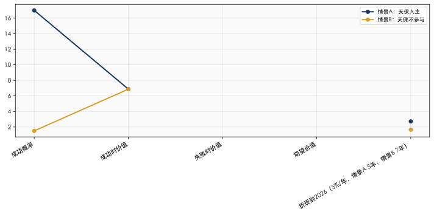
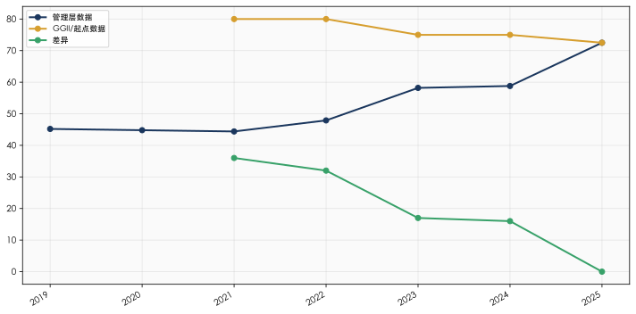
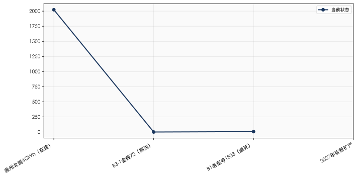

工信部电池产能审批改革（初步信息，待工信部确认）：
根据行业初步信息，工信部正在推进电池产能审批机制的系统性改革，核心变化包括以下四个方面：
（1）审批权限上收到中央 原来省级即可自行备案审批新建电池产能；新规将审批权限上收到中央，实行统筹指标管理，地方不得随意批准新项目。
（2）存量已批项目不受影响 2026年已备案、已开工、已获批的产能照常建设、投产，不受新规限制。真正收紧的窗口从2027年下半年新增产能申请开始落地。
（3）实行「指标制 + 分类管控」 国家按企业规模、技术实力、合规度分配扩产额度：头部大厂优先获得指标；中小厂商、无技术积累、低端产能企业基本不再获批新扩产。
（4）硬性门槛抬高 新建项目强制要求高能量密度、长循环寿命、安全合规、碳足迹达标；低端小电芯、落后工艺产能直接限制准入。
⚠️ 重要提示：上述信息为行业初步判断，尚未经工信部正式确认。星恒后续将赴工信部确认具体政策内容和时间表。当前分析基于「高概率情景——新建10GWh产能无法在天津落地」进行推演。不排除以下替代可能：(a) 政策留有新增审批窗口，满足硬性门槛后可申请；(b) 通过产能置换路径——将已淘汰的落后产能指标置换至天津——实现变相落地。建议在工信部确认后更新本附件中的政策假设。
来源：行业初步信息（[L] ★★★☆☆），待工信部正式确认后升级为 [A] 级别。
| 原方案 | 核心要素 | 去产能后状态 | 关键变化 |
|---|---|---|---|
| 方案1：13.73%+第一大股东+控制董事会→并表 | 收购A组13.73%→成为第一大股东→控制董事会→实现并表 | 不变 | 无产能捆绑，纯股权交易路径 |
| 方案2：13.75% + 10GWh产能 | 少数股权+产能落地JVC | 退化为纯13.75%财务投资 | 失去产能协同三重价值（战略影响力/底线保护/估值溢价支撑） |
| 方案3：仅落地产能（无股权） | 纯产能JVC | 删除 | 新建产能面临审批障碍 |
方案2退化的定量影响（详见02号文档方向一）：
| 维度 | 有产能版本 | 无产能版本 | 恶化幅度 |
|---|---|---|---|
| 战略影响力 | 产能JVC协议提供间接影响力 | 完全无影响力（13.73%少数股东） | 严重 |
| IRR底线保护 | 产能ROE 8.1%独立回报 | 无任何兜底 | 严重 |
| 估值溢价支撑 | 产能协同部分支撑1.0x PS | 无协同支撑 | 显著 |
| 5年纯财务IRR | — | -20.3%（基准情景） | 深度负值 |
核心结论：去产能后，方案2（纯13.75%）的独立投资逻辑薄弱。方案2必须升级为控股路径（方向二≥30%）或上市平台整合（方向三A/三B）才具备经济合理性。
核心思路：天保不在一开始追求控股，而是以「轻介入」（13.73%少数股权）+「附条件协议」（锁定管理层表决权期权）的方式，先推动星恒自行IPO。IPO成功则轻资产退出获利；IPO失败则自动触发「升级」——获管理层表决权→升格为第一大股东→控股并表→启动替代路径。
路径一（轻介入）：13.73% + 附条件协议推动IPO
IPO成功 → 天保13.73%二级市场退出（MOIC 0.82-1.38x），管理层保留一切，各方共赢
IPO失败 → 附条件协议触发：
管理层表决权→天保（13.73%+6.26%=19.99%第一大股东）
利用恐慌低价增持B组→30%+并表
路径二（控股并表）→ 四种情景：
情景一：装入天保基建（A股）
情景二：装入天保能源（港股）
情景三：推动独立上市
情景四：上市失败→底线处置
| 维度 | 路径一（轻介入） | 路径二（控股并表） |
|---|---|---|
| 天保持股 | 13.73% | 30%+（+管理层表决权） |
| 资金需求 | 5亿 | 8-11亿（含B组增持） |
| 触发条件 | 当前即启动 | IPO失败后触发 |
| 并表 | 否 | 是 |
| 控制权 | 少数股东 | 控股股东 |
| 退出路径 | IPO二级市场 | 替代路径（A股注入/独立上市等） |
| 核心风险 | IPO失败（73%概率） | 监管审批+股权冻结阻断并购 |
以下第二至七章按「路径一 → 路径二 → 谈判反推 → 执行」展开。
| 投资人群体 | 持股 | 核心诉求 | 当前状态 | 紧迫度 |
|---|---|---|---|---|
| A组（10家PE） | 13.73% | 立即退出——对赌触发，3-4家已起诉/仲裁 | 天保5亿正在收购谈判中 | 🔴极高 |
| 启源纳川 | 17.73% | 债务危机化解（纳川股份被执行22.33亿） | 对赌回购义务人（已违约），由GP+管理层实质控制 | 🔴极高（法律风险） |
| B组-急迫（盈科系等） | ~12.34% | 想走但可等待——已有2家起诉，耐心消耗中 | 观望天保A组收购进度和IPO前景 | 🟠中高 |
| B组-观望（赛富系/国资系） | ~21.79% | 可接受等待IPO——对赌已触发但选择暂不执行 | 需要明确的IPO时间表和路径 | 🟡中 |
| 战略国资（深创投/安徽高新投） | 15.83% | 战略持有+期待IPO——不急于退出 | 认可星恒产业价值 | 🟢低 |
| 管理层（苏州袍泽） | 6.26% | 保住平台+兑现股权价值——核心是「不下桌」 | 冯笑个人不承担回购连带担保责任（见6.1.1节确认）。管理层核心诉求：清理启源纳川僵局→打通IPO路径→袍泽股权变现 | 🟠中高 |
第一步核心操作：
天保基建以7折（12.1元/股，总价5亿）收购A组10家PE持有的星恒13.73%老股
同步与冯笑/管理层签署《附上市条件的表决权委托框架协议》（公证处托管）
出资清理启源纳川僵局——打通IPO前置条件
引入委托加工天津平台增量订单——改善星恒业绩
工信部产能审批改革的核心制约在于新建产能的行政审批门槛大幅抬高（审批权限上收+指标制+硬性门槛），而非限制存量产能的利用方式。通过在天津保税区设立运营实体（「天保星恒新能源有限公司」，以下简称「天津平台」），以委托加工模式利用星恒现有产能（滁州/苏州/青川），实现：
天津平台（天保控股51%+星恒49%）
委托加工协议 → 星恒滁州基地（现有产能，部分产能专供天津平台）
委托加工协议 → 星恒苏州基地（现有产能）
委托加工协议 → 星恒青川基地（LMFP前驱体）
产品：轻型动力电池模组/PACK
客户：北方市场（京津冀两轮车/三轮车锂电）+ 天津保税区出口
产值归属：计入天津保税区工业产值，享受保税区税收优惠
(1) 法律依据
| 法规层次 | 依据 | 适用性 |
|---|---|---|
| 《民法典》合同编第770条（承揽合同） | 委托加工=承揽合同，定作人提供技术要求，承揽人完成工作交付成果 | ✅ 成熟法律框架 |
| 《产品质量法》第26-27条 | 委托方作为品牌方承担产品质量责任 | ⚠️ 天津平台需建立质量管控体系 |
| 《环境保护法》+ GB 31573-2015 | 生产环节环保责任由承揽方（星恒工厂）承担 | ✅ 天津平台自身无生产排放 |
| MIIT电池产能审批新规（初步信息） | 仅约束新建产能的行政审批，不约束委托加工关系——委托加工不涉及新增产能指标申请 | ✅ 关键合规论证点 |
(2) 与产能审批新规的兼容性论证
产能审批新规的核心逻辑是「中央统筹指标+分类管控+硬性门槛」——其针对的是新增产能的行政审批门槛大幅抬高，而非优化存量产能的利用方式。委托加工模式不新建任何产线、不申请新增产能指标、不新增行业总产能，仅改变存量产能的客户结构和产值归属。产能审批新规的字面含义和立法目的均不覆盖委托加工安排。 此外，即使未来星恒自身申请扩产指标，委托加工天津平台的存在反而构成「已有实质性市场需求」的有利论证，有助于在指标分配中占据优势。
(3) 需关注的合规边界
若星恒为满足天津平台订单而扩建滁州/苏州产线→触发产能审批新规（需申请中央指标+满足硬性门槛，难度大幅提高）
若天津平台提供资金/设备给星恒用于扩产→可能被视为变相新增产能，同样触发审批
安全边界：天津平台的年度委托加工量≤星恒现有闲置产能（不触发星恒扩产）
产能置换可能性：若星恒将已淘汰的落后产能指标置换至天津，可在不新增净产能的前提下实现天津本地化生产。该路径的合规性需工信部确认
| 要素 | 设计 | 论证 |
|---|---|---|
| 天津平台股权 | 天保控股51%（并表）+ 星恒49%（权益法核算） | 天保控股并表，营收计入天保合并报表 |
| 委托加工定价 | 成本+5-10%加成（独立交易原则） | 需第三方转让定价报告，避免关联交易合规风险 |
| 产能来源 | 星恒滁州基地当前产能利用率约60-70%（FY2025，[C]行业估计），闲置产能可覆盖天津平台初期需求 | 不触发新建产能审批 |
| 产品方向 | 轻型动力电池（两轮车/三轮车/低速车）+ 便携储能 | 与星恒现有产品线一致 |
| 产值目标 | 第1年5-10亿 → 第3年20-30亿（相当于新增约0.5-1GWh产量，[L]推算） | 值注入天津保税区，支撑天保与地方政府谈判 |
与直接新建10GWh产能相比，委托加工模式的价值不在于规模，而在于：
合规绕过产能审批门槛：零新建产能=无需申请中央产能指标=免于硬性门槛审核
快速启动：6-9个月可完成公司设立+委托加工协议签署+首批订单交付（vs新建产能24-36个月）
轻资产运营：天保不需要投入厂房/设备CapEx，仅需运营资金
产值归属天津：天津平台营收计入保税区工业产值——满足地方政府对「产业引入」的核心KPI
为星恒提供增量订单：缓解星恒产能利用率压力（FY2025约60-70%），增强天保对星恒的谈判地位
| 风险 | 等级 | 缓解措施 |
|---|---|---|
| 天津平台利润率薄（代工费模式，GM估计5-10%） | 🟡 P2 | 规模放量+保税区税收返还可提升ROE |
| 控制力不足导致委托加工虚置（核心风险） | 🔴 P0 | 若天保仅为少数股东（13.73%无控制权），星恒可随时以「产能紧张」「排期冲突」为由压低天津平台订单优先级、提高代工价格、或拒绝分配闲置产能。委托加工协议的法律约束力无法替代实际控制力——详见下方专论 |
| 星恒谈判筹码强（掌握全部产能资源） | 🟡 P1 | 天保通过A组收购获得13.73%股权→成为星恒股东→利益对齐 |
| 产能审批政策未来可能扩展至委托加工 | 🟢 P3 | 当前改革针对新建产能行政审批；跟踪工信部后续政策解读 |
| 委托加工产品质量责任归属 | 🟡 P2 | 天津平台需建立独立质检体系；协议明确责任划分 |
委托加工模式的核心脆弱点不在于法律合规性，而在于实际执行中的控制力缺位：
委托加工协议（法律约束力）
名义上：天津平台下单 → 星恒必须排产 → 交付 → 结算
但实际上：星恒掌握全部产能资源 + 生产调度权 + 成本信息
若无控制权，天保无法——
强制星恒优先排产天津平台订单（vs星恒自有客户）
约束代工定价（星恒可随时以「成本上涨」为由提价）
核查真实产能利用率（星恒可声称「产能已满」拒绝接单）
在星恒管理层变更后维持协议连续性
两种情景下的实效对比：
| 维度 | 情景A：天保有控制权（方案1） | 情景B：天保无控制权（方案2退化版） |
|---|---|---|
| 产能调度 | 董事会决议→优先保障天津平台订单 | 协议请求→星恒管理层自主决定优先级 |
| 代工定价 | 可通过董事会施加成本透明+合理加成 | 星恒单方定价，天津平台被动接受 |
| 产能分配争议 | 董事会层面协商解决 | 法律诉讼（耗时+关系破裂） |
| 管理层变更后 | 控制权不随人员变动而消失 | 协议可能被新管理层重新解释或消极执行 |
| 实效等级 | 高——委托加工=准自有产能 | 低——委托加工=普通客户关系，随时可被降级 |
结论：委托加工模式不是「控制权的替代品」，而是「控制权的放大器」。没有控制权，委托加工协议只是一纸承揽合同——法律上有效、实际上无力。方案1（13.73%+控制董事会→并表）是委托加工天津平台发挥实效的必要前提。
[!NOTE] 💡 置信度：委托加工的合规性论证基于产能审批改革初步信息和现行法规文本分析（★★★☆☆）。产能审批新规的具体内容和时间表尚待工信部正式确认（★★☆☆☆）。建议在正式推进前：(a) 星恒赴工信部确认审批改革的具体内容；(b) 通过天津保税区管委会与工信部预沟通委托加工模式的合规性；(c) 同步探索产能置换路径作为备选方案。
传统谈判框架中，管理层与天保的利益存在结构性张力：
天保需要管理层的表决权委托来降低并表成本（从10.87亿降至8.61亿，节省2.26亿，-21%）
管理层担心出让表决权后失去经营自主权，且没有对应的「对价」——凭什么无偿交出？
「附上市条件协议」将这一零和博弈转化为正和博弈：
核心交易结构：
天保控股 ←── 附上市条件协议 ──→ 管理层（苏州袍泽 6.26%）
天保承诺： 管理层承诺：
(a) 出资清理启源纳川僵局 (a) 签署表决权委托书+第三方托管
(b) 引入增量订单（委托加工天津） (b) 若IPO成功→托管解除，管理层保留
(c) 利用13.73%股东地位+管理层的 全部股权+按IPO规则自由退出
经营配合，共同推动星恒港股IPO (c) 若IPO失败→表决权委托自动转为
不可撤销（≥10年）+一致行动关系生效
→天保成为第一大股东
结局：IPO成功 → 双赢（管理层保留全部股权自由退出）| IPO失败 → 天保风险保护（自动获第一大股东地位）
关键前提：IPO尝试期间，天保持有13.73%（少数股东），管理层保留表决权自主行使。
管理层不是「交出」表决权，而是以表决权作为「IPO失败保险」的对价。
关键创新：将「表决权委托」从管理层单方面让步，重构为「上市对赌」——天保出资清理启源纳川僵局（打通IPO前置条件）+引入增量订单，管理层以「IPO失败后让渡表决权」作为对价。IPO尝试期间，天保维持13.73%少数股东地位，星恒仍由管理层主导经营和IPO进程。 IPO成功则管理层保留全部经济利益（6.26%按IPO估值变现）；IPO失败则天保自动获得管理层表决权→成为第一大股东→启动替代方案。管理层在IPO失败后仍保留6.26%的经济利益（天保做大了星恒，管理层仍能分到钱）。
法律基础：
| 法律依据 | 内容 | 适用性 | 置信度 |
|---|---|---|---|
| 《民法典》第158条 | 民事法律行为可以附条件。附生效条件的民事法律行为，自条件成就时生效 | 直接适用——IPO成功/失败作为条件 | [A] ★★★★★ |
| 《民法典》第160条 | 当事人为自己的利益不正当地阻止条件成就的，视为条件已成就；不正当地促成条件成就的，视为条件不成就 | 防止任一方恶意操纵IPO进程 | [A] ★★★★★ |
| 《公司法》第106条 | 股东可以委托代理人出席股东大会会议 | 表决权委托的直接法律依据 | [A] ★★★★★ |
| 《上市公司收购管理办法》第83条 | 一致行动的定义（非上市公司合同可参照援引） | 一致行动条款的参考框架 | [A] ★★★★★ |
| 《公证法》第12条 | 公证机构可以办理「保管」事务 | 第三方托管表决权委托书的法律基础 | [A] ★★★★★ |
(1) 「IPO成功」的定义（避免歧义触发争议）
| 要素 | 定义 |
|---|---|
| 上市地 | 香港联交所主板、A股科创板/创业板/主板（以天保与管理层共同书面确认为准） |
| 最低发行估值 | 投前估值≥30亿人民币 或 ≥IPO前12个月PS的0.8x（以孰低者为准） |
| 最低融资额 | ≥5亿人民币等值 |
| 完成标志 | 正式挂牌交易首日 |
| 最晚期限 | 协议签署后5年内（即2031Q2前）——对应控制权变更后3个完整财年+1年审核周期的合理窗口 |
(2) 表决权委托的「附条件生效+第三方托管」机制
协议签署日（2026Q3-Q4）：
天保+管理层签署《附上市条件的表决权委托框架协议》
管理层签署空白表决权委托书→交第三方（公证处）托管
托管条件：仅在IPO失败触发事件发生时释放给天保
天保+管理层签署《附上市条件的一致行动意向函》
公证处出具《托管公证书》
IPO尝试期间（2027H1-2031Q2）：
天保持有13.73%（少数股东），管理层自主行使6.26%表决权
表决权委托书由公证处继续托管——不释放、不生效
星恒以现有股东结构申报IPO（天保为少数股东+管理层为经营控制人）
优势：无控制权变更→不触发HKEX Rule 8.05(c)的3年营业记录重算
管理层签署的空白委托书存于公证处，对IPO申报材料中的股权结构认定无影响
IPO失败触发事件（以下任一）：
触发A：最晚期限（5年）届满未完成上市
触发B：IPO申请被上市地交易所最终驳回/否决（含A1被HKEX退回且6个月内未重新提交）
触发C：保荐人出具书面意见认为星恒「不具备上市条件」
触发D：管理层书面宣布放弃IPO推动
触发后30个自然日内：
公证处将表决权委托书交付天保→管理层6.26%表决权归天保行使
《一致行动协议》正式生效（天保+管理层在股东会投票中一致行动，以天保意见为准）
天保在星恒的累计表决权 = 13.73%（自有）+ 6.26%（管理层委托）= 19.99% → 第一大股东地位
(3) 双方的核心承诺
| 天保承诺 | 管理层承诺 |
|---|---|
| 交割后6个月内委聘IPO保荐人+启动Pre-A1工作 | 签署空白表决权委托书交公证处托管（附条件生效） |
| 交割后12个月内完成启源纳川清理（含LP份额收购方案） | IPO推进期间配合保荐人尽调+不恶意阻碍 |
| 为星恒引入≥2亿增量订单（委托加工天津平台，按市场价） | 不得将袍泽股权转让给天保竞争对手（Right of First Refusal归天保） |
| 发生控制权变更后3年内提交A1申请 | 不得单独或联合其他股东发起对抗天保的股东行动（Standstill） |
| 管理层团队留任至IPO完成后1年（任免需管理层同意） | 违反上述承诺→天保有权以协议签署日价格的80%强制收购管理层所持星恒股权的50% |
(4) 管理层的保护条款（降低其签约阻力）
| 保护条款 | 内容 | 法律基础 |
|---|---|---|
| 经营自主权保障 | 天保不干预星恒日常经营（采购/研发/销售/人事），仅对预算/重大投资（≥净资产10%）/高管任免/增减资行使决策权 | 《民法典》第5条（自愿原则） |
| IPO成功保护 | 若IPO成功，管理层表决权委托自动终止；管理层可于IPO后锁定期（1年）满在二级市场自由退出 | — |
| 最低回报保障 | 若IPO成功但投前估值<30亿→天保以现金向管理层补足差额的50%（即天保共担上市估值不达预期的风险） | 《民法典》第158条（附条件给付义务） |
| 随售权（Tag-Along） | 天保若向第三方出售所持星恒股权（≥15%），管理层有权按同等条件同步出售其持股的同等比例 | 参照PE投资标准条款 |
| 否决权保护 | 天保处置所持星恒股权（≥10%）时，需经管理层同意——防止天保将管理层「卖给不合适的第三方」 | 《民法典》第158条 |
[!NOTE] 💡 第三方托管机制（[K] ★★★★☆）：表决权委托书的预先签署+公证处托管是成熟的交易架构。公证处的法律角色参照《公证法》第12条（保管事务）和《民法典》第919条（委托合同）。托管人独立于双方，仅在约定条件成就时释放文件——避免了「管理层签了但不交付」或「天保拿了但提前使用」的双向违约风险。实践中，公证处托管在上市公司控股权转让的意向协议阶段有较多应用案例。
前提：天保仅持有A组13.73%（投资成本5亿），未在IPO前推至30%+控股。管理层保留表决权，星恒以现有股东结构自行推进港股IPO。天保的角色是「关键少数股东+IPO推动者」（出资清理启源纳川+引入天津增量订单改善业绩），而非控股股东。
| 利益相关方 | 持股 | IPO前状态 | IPO后退出路径 | 利益变化 |
|---|---|---|---|---|
| 天保控股 | 13.73% | 少数股东（非控股、非并表），投资成本5亿 | 按HKEX非控股股东锁定规则后二级市场退出 | 退出价值 = 星恒IPO估值 × 13.73%。推算：若IPO估值30-50亿（PS 1.0-1.5x × FY2030E营收基准35亿，其中FY2025实际25亿+CAGR 12%含委托加工增量），对应退出4.1-6.9亿（MOIC 0.82-1.38x = 退出价值÷5亿成本）。回报温和——核心价值在于「验证路径+各方共赢」 |
| 管理层（苏州袍泽） | 6.26% | 表决权自主行使——IPO成功=附条件协议终止，管理层保留完整股权+经营控制权 | 锁定期1年后二级市场退出 | 估值=IPO估值×6.26%（推算：30-50亿×6.26%≈1.9-3.1亿） |
| B组投资人 | ~34.13% | 急迫者在IPO推进期间可能折价卖给天保；观望者留存等IPO | 锁定期6个月后退出 | 退出部分即时变现；留存部分IPO溢价退出 |
| 战略国资 | 15.83% | 继续持有 | IPO后按国有股转持规则处理 | 账面回报+产业政策任务完成 |
| 启源纳川 | 0%（已清理） | 天保出资清理完毕 | — | 纳川股份债务问题部分化解 |
情景A结论：IPO成功是帕累托最优——所有方均受益。天保作为轻资产催化者（仅投入5亿），核心价值在于「让IPO成为可能」（清理启源纳川+引入增量订单），而非控制IPO过程。此情景下无需进行控股路径的收益/风险量化分析——路径一本质是「附条件协议的期权价值」而非「控股投资的财务回报」。
触发机制：IPO最晚期限（5年）届满/IPO申请被驳回/保荐人出具「不具备上市条件」意见→公证处30日内释放表决权委托书→天保获管理层6.26%表决权→累计19.99%→星恒第一大股东。
前提：IPO尝试失败，附条件协议触发——管理层表决权委托书从公证处释放给天保→天保从13.73%少数股东升级为13.73%+6.26%=19.99%表决权的第一大股东。
| 利益相关方 | IPO失败时的状态 | 附条件协议触发后 | 各方真实处境与决策压力 |
|---|---|---|---|
| 天保控股 | 持有13.73%（投资5亿），作为少数股东推动IPO的努力未获成功 | 自动获得管理层6.26%表决权→累计表决权19.99%→成为星恒第一大股东。 但19.99%仍不足30%并表门槛——天保面临抉择：(a) 继续增持B组至30%+→并表+完整控制；(b) 以19.99%第一大股东身份直接推进替代路径 | 5亿投资未亏损（星恒仍有产业价值），但退出路径封闭。天保此刻的角色从「少数股东+IPO催化剂」转变为「第一大股东+重组推动者」——手握管理层表决权+唯一有资金和意愿的买方地位 |
| 管理层（冯笑/袍泽） | 6.26%股权无法变现，「等了5年仍是纸面财富」 | 表决权归天保→失去对公司的控制，但仍保留6.26%经济利益 | 心态：「IPO梦碎了，但袍泽股权还在——天保做大了星恒，我们也能分钱」。天保不需要打压管理层——反而需要管理层继续经营好星恒→利益一致性仍然存在 |
| B组急迫（盈科系~12.34%） | 持仓第9-11年，基金存续期完全耗尽，LP集体诉讼逼近 | 天保以外无其他接盘方 | 最焦虑的群体——此刻「任何价格都是好价格」。对天保替代方案的态度将从「6折太低」转变为「4折也可以谈」。天保可以低价增持→推至30%+并表 |
| B组观望（赛富系/国资系~21.79%） | 持仓第9-11年，国资LP审计压力+外资LP退出诉求 | 需要给LP一个交代——无法继续无限期等待 | 心理防线已破——IPO预期归零后，「折价退出」从「不可接受」变为「唯一选项」 |
| 战略国资（深创投/安徽高新投~15.83%） | 产业投资逻辑尚在（星恒仍是两轮车锂电头部），但退出路径封闭 | 需要看到替代方案的时间表和确定性 | 产业投资使命≠无限期持有——国资体系同样有退出考核压力 |
| 星恒公司 | 行业竞争持续加剧，没有上市平台的融资劣势日益明显 | 天保主导替代方案推进 | 如果不走替代方案→可能在宁德/比亚迪的规模碾压下逐步边缘化 |
情景B的核心矛盾：IPO失败对天保是「退出路径阻断」（严重），但对其他投资人是「生存威胁」（更严重）——基金存续期耗尽+LP诉讼+股权无流动性。这种不对称的痛苦程度，是天保在IPO失败后安抚投资人的核心杠杆。 同时，附条件协议使天保从13.73%少数股东自动升级为第一大股东，为后续操作（低价增持至30%+/推进替代路径）提供了法律和谈判基础。
| 情景 | 概率 | 天保投资与回报 | 管理层结果 | B组投资人结果 |
|---|---|---|---|---|
| 情景A：IPO成功（天保13.73%少数股东→IPO退出） | 16.8% | 投资5亿→退出4.1-6.9亿→MOIC 0.82-1.38x（温和正回报） | 1.9-3.1亿（财务自由），表决权从未交出 | 留存部分享受IPO溢价；退出部分已即时变现 |
| 情景A'：IPO成功但估值低于预期（PS 0.5x） | 10% | 投资5亿→退出2.5-3.5亿→MOIC 0.5-0.7x（轻度亏损） | 1.0-1.5亿（勉强正回报） | 留存部分微利 |
| 情景B：IPO失败→附条件协议触发→天保获表决权成为第一大股东→低价增持+替代路径 | 73.2% | 前期5亿+后续增持至30%+约3-6亿（利用恐慌低价窗口）→总成本8-11亿→替代路径退出→MOIC取决于路径选择（见9.4节）。核心区别：天保在IPO失败后从少数股东升级为控股方，低价增持窗口打开 | 表决权失去但股权保留；经济利益与天保一致 | 天保提出安抚方案菜单（见9.6节） |
⚠️ 核心洞察：(1) 纯IPO成功情景下天保的回报（MOIC 0.82-1.38x）温和——5亿买13.73%少数股权的IPO退出不能带来暴利。(2) 附条件协议的战略价值不在IPO成功情景，而在73%概率的IPO失败情景——它确保天保从「套牢的少数股东」自动升级为「掌控局面的第一大股东」，然后可以通过低价增持（利用恐慌窗口）+替代路径（A股注入/重新上市）获取更高回报。(3) 附条件协议不是锦上添花——它是天保整个投资策略的风险管理核心支柱。
IPO失败→附条件协议触发→天保获管理层表决权（19.99%第一大股东）→利用恐慌窗口低价增持B组急迫（4-5折，2.5-3.5亿）→持股达30%+→并表+完整控制→启动替代路径。
若B组要价过高，可跳过增持，以19.99%第一大股东身份直接推进替代路径（降级方案）。
| 维度 | 路径A：装入天保基建（A股） | 路径B：装入天保能源（港股） | 路径C：星恒重新独立上市 |
|---|---|---|---|
| 操作性质 | 天保基建发股+现金收购星恒100%股权（重大资产重组） | 天保能源发股+现金收购星恒控股权 | 更换保荐人/调整架构后重新申报IPO |
| 时间窗口 | 2030-2032（需先完成地产剥离+实控人变更3年等待期） | 2030-2032 | 2031+（前次失败后需冷却期+实质性变化论证） |
| 监管复杂度 | 🔴极高——房地产上市公司跨界收购+CSRC审批+主业转型论证 | 🔴极高——极大概率触发HKEX RTO（反向收购=新上市申请） | 🟠中高——需解释前次失败原因+实质性经营变化 |
| 天保控股控制权稀释 | 见9.5.1节量化测算（合理结构下可维持≥40%） | 见9.5.2节（RTO是根本性障碍） | 无直接稀释（天保能源不参与此路径） |
| 投资人退出方式 | 取得天保基建股票（A股流动性）+部分现金对价 | 取得天保能源股票（港股） | 取得星恒股票（港股，若成功） |
交易框架：天保基建（000965.SZ）向星恒全体股东发行股份+支付现金，收购星恒100%股权。交易后星恒成为天保基建全资/控股子公司。
星恒估值区间（IPO失败情景，无流动性溢价）：
FY2030E营收基准：35亿
推算：FY2025实际25亿 × (1+12% CAGR)^3年（2027-2030）≈ 35.1亿，含委托加工天津平台增量订单贡献
来源：[B] FY2025审计营收 ★★★★★；CAGR基于行业增速+委托加工增量 [L] ★★★☆☆
PS倍数：0.5-0.8x
基准参考：天能动力港股PS 0.9-1.4x（上市+流动性溢价），非上市折价50-60% → 0.45-0.7x，取0.5-0.8x含替代路径期权价值
来源：[B] akshare实时（2026-06-04）天能动力PS ★★★★★；折价率 [K] ★★★★☆
估值区间：35亿 × 0.5x = 17.5亿（悲观）~ 35亿 × 0.8x = 28亿（乐观），中枢取22亿（PS≈0.63x）
对价结构设计（以中枢22亿为例）：
| 对价形式 | 金额 | 占比 | 资金来源 |
|---|---|---|---|
| 现金 | 8亿 | 36% | 天保基建自有资金+银行并购贷款 |
| 股份 | 14亿 | 64% | 天保基建定向增发新股（定价≥届时BPS） |
| 合计 | 22亿 | 100% |
天保控股控制权稀释测算（以FY2025股本为参考，实际以交易时点为准）：
计算公式：新增发股数 = 发股对价 ÷ 发行价；发行后总股本 = 原总股本 + 新增发股；天保控股新持股比例 = 5.71亿股 ÷ 发行后总股本
| 情景 | 新增发股（亿股） | 发行后总股本（亿股） | 天保控股持股比例 | 是否≥34% |
|---|---|---|---|---|
| 基准（交易前） | — | 11.10 | 5.71÷11.10 = 51.45% | ✅ |
| 纯现金收购（0%发股） | 0 | 11.10 | 5.71÷11.10 = 51.45% | ✅ |
| 现金+发股（14亿÷4.91元） | 2.85 | 11.10+2.85=13.95 | 5.71÷13.95 = 40.93% | ✅（安全边际=40.93%-34%=6.93pct） |
| 纯发股收购（22亿÷4.91元） | 4.48 | 11.10+4.48=15.58 | 5.71÷15.58 = 36.65% | ✅（安全边际=36.65%-34%=2.65pct） |
| 压力测试：纯发股+估值30亿（30亿÷4.91元） | 6.11 | 11.10+6.11=17.21 | 5.71÷17.21 = 33.18% | 🔴 跌破34%红线 |
关键结论：
在合理估值（17.5-28亿）和合理现金/股份比例（≥30%现金）下，天保控股持股可维持在40%以上，安全边际充足
34%红线触发边界：纯发股收购 + 星恒估值≥27亿。这是一个可管理的约束——通过控制现金/股份比例即可规避
额外保护：(a) 天保控股可同步参与配套融资，按51.45%比例认购新增股份→持股完全不稀释；(b) 可分步装入（先装51%控股权→降低单次发股规模）；(c) 现金部分通过并购贷款增加
交易框架：天保能源（01671.HK）发股+现金收购星恒控股权。
[!DANGER] 🔴 路径B的核心矛盾：如果星恒自身已经无法满足港股IPO标准（导致情景B——IPO失败），那么将星恒装入天保能源同样无法通过RTO审核——因为RTO=新上市申请标准。路径B没有绕过IPO审核，它只是换了一个「壳」去面对同一套审核标准。
RTO触发分析（HKEX Rule 14.06B）：
计算公式：资产比率 = 收购资产总资产 ÷ 上市公司总资产 × 100%；盈利比率 = 收购资产盈利 ÷ 上市公司盈利 × 100%
| 测试维度 | RTO标准 | 天保能源 vs 星恒 | 是否触发 |
|---|---|---|---|
| 资产比率 | ≥100% | 星恒总资产~50亿（FY2025，[B] ★★★★★）÷ 天保能源总资产~12亿（FY2025年报，[B] ★★★★☆）≈ 417% | 🔴 极大概率触发 |
| 盈利比率 | ≥100% | 星恒净利3,986万（FY2025审计，[B] ★★★★★）÷ 天保能源净利~1,800万（FY2025年报估计，[B] ★★★☆☆）≈ 221% | 🔴 极大概率触发 |
| 控制权变更 | 收购后控制权变更 | 取决于发股量——若天保控股持股被稀释至<30%则触发 | 🟠 可能触发 |
例外情景（路径B仅在下述情况可行）：
IPO失败的唯一原因=「港股市场窗口关闭」（如2022年港股IPO冰封），而非星恒自身资质问题
此时天保能源作为已上市公司，可通过「主要交易」（非RTO）分步收购星恒控股权（控制单次收购规模≤天保能源总资产的50-60%）
但天保能源体量过小（总资产~12亿），单次可收购上限仅6-7亿→至少需3-4次分步收购才能完成→时间跨度7-10年
结论：路径B仅在极其有限的条件下可行（市场窗口问题+星恒自身资质过硬）。在大多数IPO失败情景中，RTO障碍使路径B不具有操作性。
适用条件（至少满足2条）：
前次IPO失败是因为「时机/窗口问题」而非「资质/持续盈利能力问题」
在失败后3年内星恒实现了实质性经营改善（营收CAGR≥20%，净利突破1亿）
港股市场环境显著回暖（恒生指数较前次申报上涨≥30%）
监管政策利好（如HKEX降低盈利测试门槛或推出锂电行业绿色通道）
劣势：
从失败到重新申报至少需2-3年的「冷却+实质性变化」论证期
如果前次失败是「资质问题」（持续盈利能力不足/行业竞争恶化），再次尝试成功概率极低
期间B组投资人持续承受LP压力→可能在此期间已经通过诉讼等方式造成公司经营的二次损害
优势：
不涉及天保基建/天保能源的股权稀释
星恒作为独立上市主体，天保可通过二级市场逐步减持退出
如果最坏情况发生——尽管天保尽力安抚，仍有大量投资人选择诉讼→股权冻结累积超过10%——此时天保基建并购在法律上被阻断。在此情景下，天保需要启动更深层的法律工具：
(a) 分步装入——仅收购无争议股权
参照华夏幸福（600340）2018年案例（标的少数股权存在诉讼但交易整体获通过），天保基建可以选择仅收购星恒的无争议股权（即未被冻结、未涉诉的股权），而将争议股权暂时保留在体外：
优点：绕过CSRC「权属清晰」门槛（标的仅限于无争议部分）
前提：无争议部分≥51%（天保能维持对星恒的并表控制）
风险：CSRC可能会问询「为何不全购」+「体外部分如何处理」——需在申报材料中说明体外部分的后续处理计划
量化：若争议股权31-38%，则无争议股权62-69%→收购51%可行
(b) 司法清理先行——以第一大股东身份推动集中清理
天保作为第一大股东（表决权36.26%），可推动星恒召开股东会，授权管理层代表公司与争议各方进行「一揽子和解」：
天保出资设立「争议股权收购基金」（如3-5亿），以固定价格向涉诉投资人收购其争议股权→投资人收到现金后同时撤诉
法律依据：《民事诉讼法》第93条（调解）+《公司法》第148条（董事高管对公司的忠实义务）+ 最高法《关于人民法院强制执行股权若干问题的规定》（2022）第4条（被执行股权的处置方式）
效果：集中清理→争议股权比例降至<10%→天保基建并购路径恢复
(c) 最底线——天保基建仅收购星恒经营性资产（而非股权）
如果股权层面的争议实在无法清理，天保基建可退一步，不收购星恒股权，而是收购星恒的经营性资产（工厂、设备、技术、客户关系等）：
《上市公司重大资产重组管理办法》第11条同样适用于资产收购——但资产的权属通常比股权清晰得多（工厂厂房/设备/专利等均可在收购前逐项核验权属）
星恒向天保基建出售经营性资产→星恒获得现金→用现金偿还投资人+清盘
代价：失去了「星恒」的品牌和法人主体连续性；操作复杂度远高于股权收购
[!CAUTION] 🟡 (c)方案的重大缺陷：(i) 资产收购无法继承星恒的上市记录期（若未来考虑将收购资产再打包上市，需重新满足3年营业记录）；(ii) 部分无形资产（客户关系/供应商关系/员工团队）难以通过资产收购完整转移；(iii) 星恒作为法人清盘可能触发与下游客户的合同终止条款。(c)方案仅作为「股权并购被彻底封堵」的最后救济手段。
IPO失败确认（最晚期限2031Q2）
失败原因诊断=「市场窗口」AND 星恒经营显著改善（净利≥1亿）
→ 优先路径C（重新独立上市，需2-3年冷却期）
若C再次失败 → 转入路径A
失败原因诊断=「资质/盈利不达标」OR 行业竞争恶化
天保基建已完成地产剥离 → 路径A（装入天保基建）
天保基建尚未完成地产剥离 → 加速地产剥离+先启路径A筹备
路径B（天保能源）：仅在「市场窗口问题+天保能源体量意外增长」的罕见组合下激活，不作为独立推荐
推荐排序：路径A（装入天保基建）> 路径C（重新独立上市）>> 路径B（天保能源，RTO障碍过大）。
当前基准（FY2025数据）：
天保控股持有天保基建：51.45%（5.71亿股 / 11.10亿股）
34%相对控制权红线（《公司法》第216条+天保基建章程）
34%对应特殊决议否决权（一票否决修改章程/增减资/合并分立等重大事项）
最大可稀释空间计算：
设 X = 天保基建为收购星恒而新发行的最大股份数（亿股）
约束条件：5.71 / (11.10 + X) ≥ 0.34
→ 5.71 ≥ 3.774 + 0.34X
→ 1.936 ≥ 0.34X
→ X ≤ 5.694亿股
对应不同发行价下的最大纯发股收购规模：
发行价≥BPS 4.91元 → 5.694 × 4.91 = 27.96亿
发行价=市价 3.33元（若获破净豁免） → 5.694 × 3.33 = 18.96亿
| 发行价格 | 最大发股数 | 最大纯发股收购规模 | 50%现金+50%发股的最大收购规模 |
|---|---|---|---|
| ≥BPS 4.91元 | 5.69亿股 | 27.96亿 | 55.92亿 |
| 市价 3.33元（豁免后） | 5.69亿股 | 18.96亿 | 37.92亿 |
与星恒估值区间对照：
| 星恒估值情景 | 对价中发股占比 | 发股价格 | 需发股数 | 发行后天保控股持股 | 34%红线 |
|---|---|---|---|---|---|
| 中枢 22亿 | 64%发股（14亿） | 4.91元 | 2.85亿 | 40.93% | ✅ 安全 |
| 乐观 28亿 | 64%发股（17.9亿） | 4.91元 | 3.65亿 | 38.73% | ✅ 安全 |
| 乐观 28亿 | 100%发股 | 4.91元 | 5.70亿 | 33.99% | 🔴 接近红线 |
| 悲观 17.5亿 | 50%发股（8.75亿） | 4.91元 | 1.78亿 | 44.33% | ✅ 大幅安全 |
结论：在合理交易参数下（星恒估值22-28亿+现金占比≥30%），天保控股持股可维持在38-44%，距离34%红线有4-10个百分点缓冲。34%红线不构成实质性障碍——但需在交易方案设计阶段将此约束作为边界条件，并准备天保控股同步参与配套融资以提供额外保护。
天保控股对天保能源持股的具体比例因天保能源体量较小且为H股，受路径B（装入天保能源）影响较大，但由于路径B已因RTO障碍基本排除，该约束不具有独立决策价值。
综合结论：天保控股对天保基建的34%控制权红线，在合理的交易参数下（星恒估值≤28亿+现金占比≥30%+同步配套融资作为备选），不会被突破。
逻辑：以上第二、三章的情景推演揭示了各投资人在不同路径下的损益——本章基于此反推最优谈判策略。
A组10家投资人特征分析：
| 投资人类型 | 典型代表 | 基金设立年份（估计） | 当前基金周期 | LP压力 | 决策偏好 |
|---|---|---|---|---|---|
| 券商系直投（海通系3家） | 辽宁海通/海通创新/湖州赟通 | ~2018-2019 | 第7-8年（典型7+2基金） | 🔴极高（已进入清算期） | 必须退出——已仲裁/诉讼 |
| 银行理财子（兴业系2家） | 江苏疌泉/兴睿永瀛 | ~2019（资管新规后理财子设立） | 第7年 | 🔴极高（资管新规合规压力+理财产品期限约束） | 必须退出——银行理财子不能长期持有非上市股权 |
| 国资产业基金（浙江国资2家） | 嘉兴沨石/沨行景纬 | ~2018-2019 | 第7-8年 | 🟠中高（国资考核+审计） | 倾向退出，但可等待 |
| 区域国资券商直投（粤开系2家） | 惠州联讯/合肥粤开 | ~2019 | 第7年 | 🟠中高 | 倾向退出 |
| 产业投资平台（中兵慧明） | 中兵慧明 | ~2018 | 第8年 | 🔴极高（已二审中） | 必须退出——已诉讼至二审 |
关键发现：A组10家中至少6-7家已进入基金清算期或面临刚性退出压力（海通系3+兴业系2+中兵慧明1=6家，占A组持股比例约10.89%/13.73%中的绝大部分）。对于这些投资人，「再等5-7年等IPO」不是一个选项——他们的LP正在要求赎回资金。
PE基金生命周期知识（[K] ★★★★☆）：中国PE基金典型结构为「5+2」或「7+2」年（投资期5-7年+退出期2年+N个1年延长期）。2019年投资的基金在2026年处于第7-8年——即使GP行使全部延长期权利，最晚也需在2028-2029年前完成全部项目退出和基金清算。每延迟一年，GP面临LP的诉讼风险和GP声誉损失。来源：[K] 基于中国证券投资基金业协会(AMAC)私募基金合同指引和行业惯例。
港股IPO不是「天保买了A组→必然发生」，而是需要一串多米诺骨牌全部倒下：
前提条件 1：启源纳川（17.73%）的对赌义务必须清理
怎么清理？纳川股份（LP）被执行22.33亿，无力履行
谁来解决？目前只有天保提出了可行方案（LP份额接盘+与GP协商）
若天保不参与 → 启源纳川僵局持续 → 至少再拖1-2年
前提条件 2：35家PE（47.87%）的全部对赌条款必须解除
怎么解除？每个PE须单独签署对赌解除协议（或通过股东会决议）
35家PE的诉求分化（A组想走/B组观望/另有部分想IPO）→ 协调成本极高
前提条件 3：实控人状态明确（当前无实控人，50家股东）
HKEX Rule 8.05(c)：3个财年在大致相同管理层及拥有权下
如果天保入主（从0→13.73%→30%+），触发「拥有权变更→重新计算3年」
前提条件 4：星恒满足上市财务标准（盈利测试/市值收益测试）
FY2025归母净利仅3,986万（审计口径），微利状态，接近盈利测试门槛
行业价格战+储能亏损可能在未来2-3年恶化利润→达不到上市标准
前提条件 5：港股市场对小市值锂电公司的接受度
力劲科技 PE 10.3x / 天能动力 PE 4.3x（akshare 2026-05-27）
港股对小型制造企业给予显著估值折价
| 步骤 | 情景A：天保入主 | 情景B：天保不参与 |
|---|---|---|
| 启源纳川对赌清理 | 2026Q3-2027H1（天保推动） | 2028+或永远（纳川股份自行破产清算+无人接盘） |
| 35家PE对赌解除 | 2027H1-2027H2（天保作为新股东协调） | 2028-2030（无协调方，各自谈判） |
| 管理层及拥有权稳定期间 | 2027H1→3个完整财年→2030（若港股路径） | ?（起始年未定） |
| 保荐人+A1提交 | 2030H2 | ? |
| 上市完成 | 2031H1（最早） | 2032+或永不 |
情景B的IPO期望时间：从2026年起至少7-10年，且成功概率不超过30%（启源纳川自身无法清理→IPO根本上被阻断）。
| IPO前提条件 | 情景A：天保入主 | 情景B：天保不参与 |
|---|---|---|
| 启源纳川清理 | 80%（天保推动+资金到位） | 20%（等待纳川破产自行解决） |
| 35家PE对赌解除 | 70%（天保协调+管理层配合） | 30%（各自谈判，协调成本极高） |
| 3年财务达标（盈利≥5,000万HKD） | 60%（取决于行业景气度） | 50%（行业因素，但公司可能因无外力推动而恶化） |
| 港股市场窗口 | 50%（3-5年后的市场不可预测） | 50%（同左） |
| 联合概率 | 80%×70%×60%×50% = 16.8% | 20%×30%×50%×50% = 1.5% |
[!CAUTION] 🟡 上述概率为基于当前已知信息的逻辑估计（[L] ★★★☆☆），非统计模型输出。核心变量是启源纳川清理——这是IPO的「一票否决」前置条件。只要启源纳川不解决，IPO永远不可能启动。天保是截至目前唯一提出明确解决方案的当事方。
假设（有利于投资人的乐观假设）：
若IPO成功：A组13.73%对应的市值 = 星恒估值×13.73%
港股IPO估值：PS 0.5x × FY2030E营收（假设100亿）= 50亿估值 → 13.73% = 6.87亿
若IPO失败：只能以协议转让退出，折价约40-50% → 13.73%价值约2.5-3亿（基于PS 0.25-0.3x）
| 情景 | 情景A：天保入主 | 情景B：天保不参与 |
|---|---|---|
| 成功概率 | ~17% | ~1.5% |
| 成功时价值 | 6.87亿（2031年） | 6.87亿（2032+年） |
| 失败时价值 | 2.5-3.0亿 | 2.0-2.5亿（公司可能更恶化） |
| 期望价值 | 6.87×17% + 2.75×83% = 3.47亿（未折现到2026） | 6.87×1.5% + 2.25×98.5% = 2.32亿 |
| 折现到2026（5%/年，情景A 5年，情景B 7年） | 2.72亿 | 1.65亿 |

关键发现：即使在有利于投资人的假设下（IPO成功时6.87亿），「等待IPO」的期望价值（天保入主情景约2.72亿）仍低于天保现金收购价5亿。而如果天保不参与，期望价值仅1.65亿——天保的收购价是该值的3倍以上。
PE投资人的决策不是「最大化期望值」，而是「在基金到期前完成退出」。对于A组已经进入诉讼/仲裁的6-7家投资人：
确定性（100%概率）× 5亿 > 不确定性（17%概率）× 6.87亿
现金今天 > 现金7年后——哪怕名义金额更高
LP不会接受「我们的钱还要再等7年，而且只有17%概率能增值」的解释
[!NOTE] 💡 「确定性溢价」的商业逻辑（[K] ★★★★☆）：这是金融学的基本原则——当退出时间超出基金剩余存续期时，GP必须接受折价以获取确定性。2019年基金到2026年已处于清算期——GP的 fidiciary duty 是「尽快以合理价格变现归还LP」，而非「冒着违反基金合同的风险博取更高回报」。继续等待IPO在商业上可能意味着：(a) GP被LP起诉违反信义义务；(b) GP声誉受损，下一只基金无法募集；(c) 投资经理个人职业生涯受损。
| 投资人群体 | 当前心态 | 对天保6-7折收购的态度 | 关键博弈点 |
|---|---|---|---|
| A组（13.73%） | 「必须走」——对赌已触发，3-4家在诉讼中，基金清算期 | 已接受7折（12.1元/股） | 天保是唯一有资金+意愿的买方 |
| B组急迫（~12.34%） | 「IPO还有希望，但仍想走」——观望天保进度+港股IPO前景 | 要求≥6折（10.3元/股），认为IPO期权仍有价值 | 天保需证明「没有天保就没有IPO」→IPO期权价值归零 |
| B组观望（~21.79%） | 「等IPO」——对赌暂缓但耐心消耗中 | 考虑留存而非卖出 | 需要结构化方案（可交换债/earn-out等）降低其「卖亏了」的心理阻力 |
| 管理层（6.26%） | 「不下桌+解套启源纳川+兑现袍泽价值」 | 非卖方——用表决权换取天保的IPO推动 | 附条件协议是双方利益最大化的最优解 |
| 战略国资（15.83%） | 「长期持有+期待IPO」 | 不急于退出 | 愿意留存等IPO——天保不需要对其施加压力 |
IPO失败消息确认后，各方心态将发生质的转变——从「IPO是大概率事件，折价退出是亏了」变为「IPO已死，现在任何退出方案都是救命稻草」：
| 投资人群体 | IPO失败后的心态转变 | 天保的谈判定位 | 天保的谈判策略（具体操作） |
|---|---|---|---|
| B组急迫（盈科系~12.34%） | 「基金在第9-11年，LP正在起诉我们——任何价格都行，只要给现金」 | 天保是「唯一买方」→价格由天保主导 | 不主动接触——等待B组急迫主动找上门。当B组自己提出「5折也可以」时，天保再以4-5折（PS 0.3-0.4x）收购，预计2.5-3.5亿拿下12.34% |
| B组观望（赛富系/国资系~21.79%） | 「LP要求年内清盘——必须给出退出方案，否则GP个人面临诉讼」 | 天保是「方案提供者」→提供结构化退出菜单 | 「分批接盘」方案：天保承诺分5年按NAV 70%每年收购20%持仓→6-8亿分5年。或提供「可交换债」（转股标的=天保基建A股）→投资人获得流动性+保底收益 |
| 战略国资（深创投/安徽高新投~15.83%） | 「我们的出资人是财政——长期挂账非上市股权会被审计追责」 | 天保是「联合推动者」→邀请战投参与替代方案 | 股权置换方案：战略国资将星恒股权按换股比例置换为天保基建股份（路径A执行时操作）→国资持有的非上市股权变为A股上市公司股票（流动性+合规） |
| 管理层（袍泽6.26%） | 「表权决已归天保，经济利益还在——天保做大了星恒我们也有份」 | 天保与管理层是「利益共同体」 | 不需要「谈判」——附条件协议已经锁定了合作关系。天保需要确保管理层在替代方案执行期间保持经营积极性（可考虑在路径A执行时给管理层额外业绩激励） |
| 方案编号 | 方案内容 | 适用对象 | 对天保的成本/影响 |
|---|---|---|---|
| A方案：即时现金退出（低价） | 天保以IPO失败后重估价格（PS 0.3-0.4x，约4-5折vs原投资成本）一次性收购全部持股 | B组急迫（盈科系~12.34%） | 约2.5-3.5亿（一次性） |
| B方案：分期结构化退出 | 天保承诺分5年按星恒NAV的70%逐年收购20%持仓，每年支付一次 | B组观望（赛富系/国资系~21.79%） | 约6-8亿，分5年 |
| C方案：股权置换 | 投资人将星恒股权按约定换股比例置换为天保基建A股（路径A执行时同步操作），取得A股流动性 | 战略国资+部分B组 | 天保基建发股（已在路径A测算中涵盖）+天保控股参与配套融资以维持控制权 |
| D方案：保留股权+支持重组 | 投资人保留星恒股权，签署支持天保重组方案的承诺函（不阻碍A股注入） | 战略国资+部分持股较小的B组 | 零当期成本，但需确保这些留存股东不会在重组投票中反对 |
| E方案：可交换债 | 天保向投资人发行以天保基建股票为质押的可交换债，固定票息3-4%/年+转股期权（行权价=发行时BPS的110%） | B组观望 | 利息成本3-4%/年+质押一定比例天保基建股票 |
IPO失败前（Phase 1-2，少数股东时期）：
天保 ──→ 投资人：「请支持我们收购→我们将推动IPO」
投资人：「凭什么相信你？我们等等看」
→ 天保是「请求者」——投资人可以「不配合」
IPO失败后（Phase 3→替代路径启动，第一大股东时期）：
天保 ──→ 投资人：「IPO路线已被客观证伪（不是天保的问题，是市场/资质问题）。
现在有两个选择——
A. 接受我的现金收购（虽然折价，但这是你今天唯一能拿到的现钱）
B. 签署支持重组方案的承诺函（将星恒股权置换为天保基建A股，
获得流动性+享受大飞机+新能源双轮驱动的估值重估）
当然，你也可以选择什么都不签——继续持有非上市、无分红、
无退出路径的星恒股权，直到LP起诉你个人。」
→ 天保是「方案提供者+唯一有执行能力的当事方」——投资人只能「选择接受哪个方案」
[!TIP] ✅ 谈判定位转换的核心价值：IPO失败前，投资人的「等待期权」（wait and see option）仍有价值——天保需要出价高到「覆盖期权价值」。IPO失败后，等待期权的价值归零——天保的出价只需要高于「零」，投资人就有接受的商业合理性。附条件协议的真正威力，不在于IPO成功的16.8%，而在于它为天保在73.2%的失败概率下，提供了无可替代的谈判主动权。
对于「坚决要走」的投资人（A组10家），7折已经是确定性很强的方案。但对于「可走可留」的投资人（B组部分），可以提供结构化方案降低心理阻力：
基础对价：6折现金（10.3元/股）→ 立即支付
附加对价：若星恒在5年内完成港股IPO → 额外支付差额至8折（13.7元/股）
若IPO估值>X → 额外支付Y
效果：投资人获得「保底现金」+「IPO上行期权」
成本：天保当期现金支出更低（6折），IPO成功后的额外支付从IPO溢价中覆盖
第一步（2026Q4）：天保以6折收购B组持股的50%
第二步（2028H1）：若IPO路径明确，剩余50%由天保以7折继续收购或投资人保留至IPO退出
天保向B组发行可交换债：
- 票面利率：2-3%/年（保底收益）
- 交换标的：天保持有的星恒股权（或天保基建/天保能源股票）
- 交换价格：约定价格
- 期限：3-5年（覆盖IPO等待期）
效果：投资人获得债券保底+股权上行期权，心理阻力最低
| 管理层要素 | 现状 | 诉求 |
|---|---|---|
| 持股平台 | 苏州袍泽（6.26%，冯笑为GP） | 不被稀释、不被迫出售 |
| 回购连带风险 | 冯笑个人无回购连带责任——全部已知诉讼中冯笑从未被列为共同被告（详见6.1.1节事实确认） | 解套——清理启源纳川僵局的核心价值不在于「消除个人担保威胁」，而在于打通IPO路径+袍泽股权增值 |
| 经营控制 | 管理层实质控制公司日常经营 | 保持经营自主权 |
| 长期诉求 | 兑现6.26%股权价值（当前非流动） | 上市→二级市场退出 |
经全量项目材料交叉核验，冯笑个人对启源纳川对赌回购不承担连带担保责任。 以下为确认依据：
| 关键事实 | 来源 | 置信度 |
|---|---|---|
| 启源纳川（有限合伙）是对赌回购义务人，对约35家PE投资人承担回购义务 | [A] 法律尽调报告（天津允公律所）附件G第2.3节、附件G第8.4节回购义务人结构图 | ★★★★★ |
| 陈志江（自然人）对部分PE投资人承担个人连带回购义务，已在多起诉讼中全部败诉 | [A] 法律尽调报告 附件G第2.3节、附件G第8.4节；附件C第3.1.3节 | ★★★★★ |
| 全部已知诉讼/仲裁中，被告方均为「启源纳川」和/或「陈志江」——冯笑从未被列为共同被告 | [A] 法律尽调报告 附件G第8.4节诉讼记录；附件F第3.1节投资人状态表 | ★★★★★ |
| 冯笑通过「冯笑1票+普通合伙人2票」控制启源纳川投决会（3/5票），实质控制启源纳川 | [B] 02号文档（股东分类与收购方案分析）第37行：启源纳川治理结构5票制详解 | ★★★★☆ |
| 冯笑是星恒电源董事长/总裁、苏州袍泽（管理层持股平台6.26%）GP | [B] 主报告第4.1节、附件G第8.1节 | ★★★★★ |
[!NOTE] 💡 前提设定：基于上述事实——冯笑从未在任何诉讼中被列为共同被告、全部回购义务人均为「启源纳川+陈志江」——本附件以下分析均以**「冯笑个人不承担回购连带担保责任」为既定前提**。不再讨论「是否承担」的存疑性问题。
对谈判策略的影响：冯笑无个人连带担保这一事实，不影响「清理启源纳川僵局=与管理层谈判的核心对价」的判断。 清理启源纳川对管理层的价值不依赖于「解除个人担保威胁」，而在于以下三项实在利好：
(a) 解除17.73%股权的司法冻结→清除IPO前置障碍（这是管理层6.26%袍泽股权实现价值的唯一路径）
(b) 管理层从「僵局控制者/IPO障碍方」变为「解套推动者」→个人声誉+职业前景正面影响
(c) 天保入主后带来的增量订单（委托加工天津平台）→星恒业绩改善→管理层6.26%袍泽股权内在价值提升
来源：[A] 法律尽调报告（天津允公律所，2026-06-04初稿）附件G汇总；[B] 项目基础材料（星恒商业尽调报告、股东名册、管理层访谈记录）。
核心谈判定位：天保不是来「夺权」的，而是来「解套」的——天保接盘启源纳川/PE的对赌义务，管理层以表决权和价格让步作为对价。
天保（13.73%+后续增持至30%+）
管理层（苏州袍泽6.26%）
管理层将6.26%的表决权委托天保行使（委托期限：至IPO完成）
OR
签署《附上市生效条件的一致行动协议》
（天保+管理层在上市后形成一致行动人，成为第一大表决权组合）
对管理层的好处：
天保（国资）背书增强上市信用
管理层保留股权（6.26%），享受IPO溢价
上市后锁定期满（通常1年）通过二级市场退出
对天保的好处：
30%+6.26% = 36.26%表决权 → 更接近特别决议否决权（>33.3%）
并表论证中增加「与管理层一致行动」=更强控制力证据
避免管理层成为「内部反对派」
核心条款：
管理层6.26%股权锁定至IPO完成后1年（不得转让）
业绩里程碑：FY2027-2029年营收CAGR ≥ 20% / 净利率 ≥ 3% → 管理层额外获得股权激励（从天保所持股份中划拨1-2%）
若IPO在5年内未实现 → 天保有权以约定价格（如最新一轮融资价格的80%）收购管理层所持股份的50%
法律依据：[K] ★★★★★——《民法典》第158条（附条件法律行为）+《公司法》关于股东间协议自由的原则。业绩对赌条款在PE投资实践中广泛使用，法律基础成熟。
[!NOTE] 💡 方案A（表决权委托）和方案B（业绩对赌）的进一步升级版本——「附上市条件的表决权委托+一致行动协议」，将管理层的表决权委托与其最关心的IPO成功绑定，实现正和博弈，详见 第九节「附上市条件的谈判策略——管理层对赌式绑定与IPO失败多路径预案」。该节提供了完整的协议法律框架、IPO成功/失败双情景推演、IPO失败后的三条替代路径量化对比，以及从各投资人角度的谈判策略分析。
持有星恒17.73%（最大单一股东）
纳川股份（LP）被执行22.33亿、20条股权冻结+轮候冻结+失信
对赌回购义务人（全体35家PE的回购义务）
GP+管理层（冯笑）控制投决会（3/5票）
关键约束：《合伙企业法》第67条——有限合伙人不执行合伙事务。即使天保取得纳川股份的LP份额，也无法控制启源纳川的星恒股权。
启源纳川的LP份额当前处于「极度折价」状态——纳川股份濒临破产，其持有的LP份额在清算中将大幅折价处置。
天保的成本优化路径：
路径：天保 → 收购纳川股份持有的启源纳川LP份额（而非直接收购星恒股权）
LP份额市场价格：约1-2折（纳川股份破产清算折价）
原因：LP无权参与合伙企业事务执行+纳川股份被执行22.33亿
天保取得的经济利益：
启源纳川持有星恒17.73% → 按天保PS 1.0x（36.4亿估值）价值约6.46亿
但LP份额购买价格仅为0.6-1.3亿（1-2折）
综合成本效果：
A组13.73%花费5亿（12.1元/股，7折）
若同时以1-2折获取LP份额 → 实际获得17.73%的经济利益但不获得投票权
综合成本：(5亿 + ~1亿) / (13.73% + 17.73%×LP折算系数)
[!CAUTION] 🟡 核心限制：LP份额 ≠ 星恒股权。天保获得LP份额后仍有以下障碍：
LP无法控制启源纳川的星恒股权投票权（仍由GP+冯笑控制）
启源纳川的星恒股权处置权仍由GP决定
天保作为LP的经济利益是间接的（启源纳川出售星恒股权→分配收益→LP按份额享有）
LP份额的价值释放策略：(a) 与GP/冯笑协商——天保以LP身份提出「将LP份额转换为直接持有星恒股权」的合伙决议；(b) 启源纳川逐步减持星恒股权→收益分配→天保（LP）获得现金回笼；(c) 启源纳川解散清算→星恒股权作为剩余财产分配给LP（天保直接获得星恒股权）。
置信度：[K] ★★★★☆——基于《合伙企业法》的LP权利限制规则是明确的。转换策略的可行性取决于启源纳川合伙协议的约定和GP/冯笑的配合意愿。
用户明确要求「最好不要搭售员工持股平台（苏州袍泽）」。理由：
绑定管理层利益：ESOP是管理层长期激励工具，搭售意味着管理层被迫退出→核心人才流失风险
IPO必要条件：上市前管理层连续性和稳定性是监管关注重点——ESOP大幅减持将触发HKEX Rule 8.05(c)/CSRC对「管理层重大变更」的审查
替代方案：用启源纳川LP份额的低价收购来实现成本优化（如6.3.2节所述），而非通过ESOP搭售
IPO失败后，天保面临一个关键的信息释放决策：是否向投资人提前透露「装入天保基建」的替代路径？
┌─────────────────────────┐
IPO失败后，天保的策略选择 │ 三线并行策略图示：
┌─────────────────────┼─────────────────────┐
策略A：提前明牌 策略B：完全沉默 策略C：分层释放
「IPO失败就装 「什么都不说， 「对管理层私下交底，
入天保基建」 先低价收筹码」 对投资人模糊表态」
↓ ↓ ↓
✅ 留住人心 ✅ 可低价接盘 ✅ 管理层稳定
❌ 大家都想搭车 ❌ 恐慌→诉讼 ❌ 执行难度高
❌ 天保无法低价增持 ❌ 股权冻结→ (需精细操作)
❌ 稀释最大化 并购受阻
投资人行为逻辑：如果天保明确宣布「IPO失败后将以天保基建A股收购星恒」，各投资人的理性计算将发生根本性转变：
| 投资人群体 | 无替代路径信号时的心态 | 收到「天保基建注入」信号后 | 对天保的影响 |
|---|---|---|---|
| B组急迫（盈科系~12.34%） | 「IPO完了，这个投资烂了——天保出4折我也卖」 | 「注入天保基建=我手里的非上市股权可以换成A股流通股！即使要等2-3年，也比4折卖给天保强」 | ❌ 要价跳跃：从接受4-5折→要求至少按注入估值的80-90%→天保增持成本翻倍 |
| B组观望（赛富系/国资系~21.79%） | 「IPO失败很糟糕，但天保可能还有其他安排」 | 「天保基建是A股上市公司，我可以换到流动性！坚决不卖！」 | ❌ 全面惜售：天保无法从B组收购任何股份→控制权无法进一步集中 |
| 战略国资（深创投/安徽高新投~15.83%） | 「星恒的产业价值还在，但退出无门令人焦虑」 | 「换到天保基建A股后可以在二级市场减持——这是合规的退出路径」 | ➡️ 中性偏负：战投原愿意留存，但会要求更高换股比例+对注入方案的否决权 |
| 管理层（袍泽6.26%） | 表决权已归天保，经济利益保留 | 「注入天保基建后管理层能不能留任？如果不能→现在就消极怠工」 | ❌ 管理不稳定：若注入方案未同步明确管理层留任+激励，反而引发核心团队不安 |
策略A的核心问题——「搭便车」困境：
提前明牌的效果是把所有投资人的退出预期锚定到「天保基建A股注入」的估值水平（而非IPO失败后的恐慌价格）。天保不仅无法低价增持，还面临一个更严重的问题：所有人都要求参与注入→天保基建需发股收购100%星恒股权→发行规模最大化→天保控股控制权稀释最大化（参考9.5节测算：100%发股收购28亿估值时，天保控股持股降至33.99%，逼近34%红线）。
策略B的假设是「不说替代方案，让恐慌推动投资人以低价卖给天保」。但这个假设成立的前提是投资人在恐慌中选择「打折卖给天保」而不是「起诉」——而这恰好是被大量历史案例证伪的。
(1) 投资人恐慌后的真实行为模式
A组的历史已经展示了投资人的行为逻辑：3-4家PE在A组阶段就已经启动诉讼/仲裁。IPO失败消息一旦公开确认，B组中已有2家起诉的投资人（盈科系）将迅速追加诉讼请求，B组观望中尚未起诉的投资人也将面临LP的起诉威胁——LP会质问GP：「IPO失败了，你为什么不起诉回购义务人/阻碍IPO的责任方来追回我们的钱？」
(2) 股权冻结对天保基建并购的法律阻断——法规依据
[!DANGER] 🔴 核心法规：《上市公司重大资产重组管理办法》（2023修订）第11条第(4)项——「重大资产重组所涉及的资产权属清晰，资产过户或者转移不存在法律障碍，相关债权债务处理合法。」这是CSRC并购重组审核的刚性门槛——不是「酌情考虑」，而是「必须满足」。
CSRC在审核实践中对「权属清晰」的量化标准（[K] ★★★★☆，基于近5年重组审核反馈意见总结）：
| 审核维度 | CSRC的实操标准 | 星恒在「诉讼爆发」情景下的达标情况 |
|---|---|---|
| 标的公司主要股权权属 | ≥90%股权不存在质押/冻结/代持/诉讼争议 | 🔴 不达标：启源纳川17.73%已有冻结+轮候冻结；B组如新增10-15%诉讼冻结→累计纠纷股权≥28-33% |
| 标的公司控制权稳定性 | 收购方取得的控股权不存在被追索/撤销的风险 | 🔴 不达标：天保持股若来自A组/B组→若这些转让人之间存在交叉诉讼→已转让股权可能被债权人撤销（《民法典》第538-539条 债权人撤销权） |
| 相关方承诺与担保 | 标的公司/转让方需出具「权属无瑕疵」承诺函 | 🔴 无法出具：存在多起已立案诉讼时，转让方无法签署无瑕疵承诺函（签了也是虚假陈述） |
| 交易所问询函 | 深交所将逐笔问询每一起冻结/诉讼的详情+会不会影响过户 | 🟠 大概率触发多轮问询→审核周期无限拉长→天保基建股价承压→发行价格下调→更多发股→稀释恶化 |
(3) 实际案例——股权纠纷阻断并购的典型判例
| 案例 | 时间 | 纠纷情况 | 结果 | 与星恒的可比性 |
|---|---|---|---|---|
| 银星能源（000862）吸收合并3家风电公司 | 2018 | 标的公司少数股东股权被冻结（涉及约12%标的股权） | CSRC否决——「标的资产权属存在重大不确定性」 | ⚠️ 仅12%冻结即被否——星恒潜在冻结比例远高于此 |
| *ST德奥（002260）收购科比特航空 | 2022 | 标的公司大股东股权被多轮冻结+标的公司本身作为被执行人 | 重组终止——交易所连续3轮问询权属问题后公司主动撤回 | ⚠️ 多轮冻结的叠加效应→监管零容忍 |
| 天山生物（300313）收购大象广告 | 2017-2018 | 标的资产存在股权代持纠纷（3名隐名股东起诉确权） | 重组过会但后续发生纠纷→上市公司陷入连环诉讼 | 🔴 即使过会，未披露的代持纠纷在交易后爆发→毁掉整个交易 |
| 万达电影（002739）收购万达影视 | 2018-2019 | 标的公司部分股权存在质押+1起未决诉讼（涉及<5%标的股权） | 交易获通过——但审核周期从6个月延长至18个月，且万达出具了全额赔偿承诺 | 🟡 少数股权纠纷（<5%）+强力赔偿承诺→仍可通过但时间成本巨大 |
判例规律总结（[K] ★★★★☆）：
10%红线：标的公司争议/冻结股权超过总股本10%→CSRC几乎必然否决或无限期中止审核
5-10%区间：可通过，但需转让方出具全额赔偿承诺+审核周期显著延长（12-18个月 vs 正常6-8个月）
<5%：通常不构成实质性障碍，但需充分披露+法律意见书
多轮冻结叠加（如一股东被A法院冻结+被B法院轮候冻结）→CSRC视为「权属纠纷复杂」→实质上不可能过会
(4) 星恒的诉讼风险量化——最坏情景测算
IPO失败确认时的股权冻结风险累加（2031Q2）：
启源纳川 17.73%（已有冻结+轮候冻结，纳川股份被执行22.33亿）→ 已有司法纠纷，属于「权属不清晰」
B组急迫（盈科系~12.34%，其中2家已起诉） → IPO失败后3-6个月内，剩余投资人大概率追加被告/申请冻结 → 新增冻结股权约8-12%
B组观望中部分投资人（~5-8%） → LP起诉GP→GP起诉回购义务人→申请冻结 → 新增冻结股权约5-8%
合计处于司法纠纷/冻结的股权：17.73% + 8-12% + 5-8% = 31-38%
远超CSRC 10%红线 → 天保基建收购星恒的路径被完整阻断
[!DANGER] 🔴 致命结论：如果IPO失败后，天保不能在6-12个月内有效遏制投资人的诉讼浪潮，星恒将有31-38%的股权处于司法纠纷/冻结状态——这是CSRC并购重组审核的绝对红线（>10%即实质性障碍）。届时，即使天保想装入天保基建，CSRC也不会批准。「沉默→低价接盘」策略可能导致天保连「接盘」这条路都被堵死。
基于策略A（明牌→搭便车）和策略B（沉默→诉讼堵路）的各自缺陷，推荐分层释放策略：
核心原则：不同对象、不同时间、不同信息深度。
信息释放的「三层同心圆」模型：
最内层（天保内部+核心顾问）：
对象：天保控股+天保基建决策层、券商、律师
信息深度：完整——三条替代路径的详细方案+量化测算
释放时机：IPO启动时（Phase 3初期）即同步筹备
目的：天保内部对「如果IPO失败怎么办」有完整预案
中间层（管理层——冯笑/袍泽核心团队）：
对象：冯笑及不超过3名核心高管（签署严格NDA）
信息深度：框架性——「天保承诺，若IPO因非管理层原因失败，
天保将启动替代资产证券化路径（含上市公司平台整合），
管理层在替代方案中保留经营职位+获得额外激励」
释放时机：IPO推进期间（Phase 3），以「附条件协议补充备忘录」形式签署
目的：锁定管理层的持续积极性——让他们知道「即使IPO失败也有退路」
最外层（投资人——B组+战略国资）：
对象：B组全体+战略国资+其他留存股东
信息深度：模糊——「天保作为第一大股东，将持续推动星恒的
资产证券化进程，积极寻求与上市平台的整合机会」
（不指明是天保基建还是天保能源还是独立上市）
释放时机：仅在以下情况之一时释放：
(a) B组中≥3家开始启动诉讼程序时——作为「灭火」信号
(b) IPO失败正式确认后——作为「稳定军心」的公告
(c) 天保已完成对B组急迫的收购（低价拿完筹码后）——作为「后续安排」
目的：
在诉讼爆发前：话语足够模糊→不构成投资人的定价锚点
（投资人无法基于「积极寻求...整合机会」来算出自己要多少钱）
在诉讼即将爆发时：话语足够可信→「与其起诉（漫长+结果不确定），
不如接受天保的退出方案（确定+可执行）」
在筹码收完后：话语足够明确→引导留存投资人配合重组
分层释放的具体时间线与触发条件：
| 阶段 | 时间 | 释放内容 | 释放对象 | 触发条件 |
|---|---|---|---|---|
| Phase 2（推至控制权） | 2027H1 | 签署「附条件协议补充备忘录」——对管理层私下交底替代路径框架 | 管理层（≤3人，NDA） | 天保持股达30%+时 |
| Phase 3（IPO推动期） | 2027H2-2030 | 天保内部完整筹备路径A（装入天保基建方案+地产剥离论证+CSRC预沟通） | 天保内部+顾问 | 持续进行 |
| Phase 3（灭火触发） | 2028-2030 | 若≥3家B组投资人启动诉讼→天保以第一大股东身份发布模糊声明：「天保将积极寻求星恒的资产证券化路径，保障全体股东利益」 | 全体股东（公告） | ≥3家新诉讼立案 |
| Phase 4（IPO失败确认） | 2031Q2 | 同步发出：(a) 投资人安抚方案菜单（见9.6.3节）；(b) 模糊替代路径声明（不点名具体平台） | 全体股东 | IPO失败确认后≤7天 |
| Phase 4（筹码锁定后） | 2031Q3-2032 | 在完成B组急迫收购+签署留存投资人支持承诺函后，正式公告「天保基建拟收购星恒」 | 公开披露（深交所公告） | 争议股权比例降至<10%时 |
分层释放的核心假设是「天保能在诉讼浪潮淹没星恒之前，用退出方案把足够多的投资人从诉讼路径上拉回来」。这需要退出方案在商业上对投资人有足够吸引力：
| 投资人选择 | 诉讼路径（不选择天保方案） | 天保结构化退出路径 | 投资人的理性选择 |
|---|---|---|---|
| B组急迫 | 起诉→1-2年一审+上诉→执行时启源纳川已无偿债能力→回款率估计<10% | A方案：即时现金退出（4-5折，PS 0.3-0.4x）→7天内到账 | 天保方案（确定性>不确定性，且4-5折>期望回款率10%） |
| B组观望 | 起诉→LP起诉GP+GP声誉毁灭→基金清盘→GP个人职业生涯终结 | B方案：分期结构化退出（5年×NAV 70%）/ E方案：可交换债（3-4%票息+转股期权） | 天保方案（避免诉讼+有保底正回报） |
| 战略国资 | 不诉讼但账面长期挂账→审计追责 | C方案：股权置换为天保基建A股（流动性+合规退出） | 天保方案（解决审计问题+获得流动性） |
[!TIP] ✅ 关键洞察：分层释放策略的核心不是「用天保基建的故事来哄投资人」，而是用「诉讼路径的极低期望回报」来倒逼投资人接受天保的结构化退出方案。天保基建注入路径的存在，不是用来「提前宣布」的，而是用来「在投资人选择诉讼之前提供一个更好的选项」。当投资人明白「起诉=1-2年诉讼+<10%回款率」vs「天保方案=确定金额+确定时间」，理性投资人会选择后者——即使天保没有明确说出「天保基建」四个字。
如果最坏情况发生——尽管天保尽力安抚，仍有大量投资人选择诉讼→股权冻结累积超过10%——此时天保基建并购在法律上被阻断。在此情景下，天保需要启动更深层的法律工具：
(a) 分步装入——仅收购无争议股权
参照华夏幸福（600340）2018年案例（标的少数股权存在诉讼但交易整体获通过），天保基建可以选择仅收购星恒的无争议股权（即未被冻结、未涉诉的股权），而将争议股权暂时保留在体外：
优点：绕过CSRC「权属清晰」门槛（标的仅限于无争议部分）
前提：无争议部分≥51%（天保能维持对星恒的并表控制）
风险：CSRC可能会问询「为何不全购」+「体外部分如何处理」——需在申报材料中说明体外部分的后续处理计划
量化：若争议股权31-38%，则无争议股权62-69%→收购51%可行
(b) 司法清理先行——以第一大股东身份推动集中清理
天保作为第一大股东（表决权36.26%），可推动星恒召开股东会，授权管理层代表公司与争议各方进行「一揽子和解」：
天保出资设立「争议股权收购基金」（如3-5亿），以固定价格向涉诉投资人收购其争议股权→投资人收到现金后同时撤诉
法律依据：《民事诉讼法》第93条（调解）+《公司法》第148条（董事高管对公司的忠实义务）+ 最高法《关于人民法院强制执行股权若干问题的规定》（2022）第4条（被执行股权的处置方式）
效果：集中清理→争议股权比例降至<10%→天保基建并购路径恢复
(c) 最底线——天保基建仅收购星恒经营性资产（而非股权）
如果股权层面的争议实在无法清理，天保基建可退一步，不收购星恒股权，而是收购星恒的经营性资产（工厂、设备、技术、客户关系等）：
《上市公司重大资产重组管理办法》第11条同样适用于资产收购——但资产的权属通常比股权清晰得多（工厂厂房/设备/专利等均可在收购前逐项核验权属）
星恒向天保基建出售经营性资产→星恒获得现金→用现金偿还投资人+清盘
代价：失去了「星恒」的品牌和法人主体连续性；操作复杂度远高于股权收购
[!CAUTION] 🟡 (c)方案的重大缺陷：(i) 资产收购无法继承星恒的上市记录期（若未来考虑将收购资产再打包上市，需重新满足3年营业记录）；(ii) 部分无形资产（客户关系/供应商关系/员工团队）难以通过资产收购完整转移；(iii) 星恒作为法人清盘可能触发与下游客户的合同终止条款。(c)方案仅作为「股权并购被彻底封堵」的最后救济手段。
推荐策略：分层释放（策略C）
Phase 2（2027H1，控股达成后）：
与管理层签署补充备忘录（私下+NDA）：框架性告知替代路径存在
Phase 3（2027H2-2030，IPO推动期）：
天保内部：完整筹备路径A（注入天保基建方案+地产剥离+CSRC预沟通）
监控B组诉讼动态：
若诉讼<3家 → 保持沉默，不释放任何替代路径信号
若诉讼≥3家 → 触发「灭火」公告（模糊表述，不点名平台）
以「诉讼路径期望回报<10%」作为与B组沟通的核心论据
Phase 4（2031Q2，IPO失败确认后）：
D+7天内：对全体股东释放安抚方案菜单+模糊替代路径声明
D+90天内：完成B组急迫收购（利用恐慌窗口——投资人在恐慌初期的决策偏向「拿钱走人」）
D+180天内：签署留存投资人支持承诺函
争议股权降至<10%后 → 正式公告天保基建收购方案
底线救济（若诉讼不可控→股权冻结>10%）：
Step 1：分步装入（仅收无争议股权，≥51%）——参照华夏幸福（600340）2018年案例
Step 2：司法清理先行（设立争议股权收购基金3-5亿）——参照最高法强制执行股权规定（2022）
Step 3：资产收购（最后手段——仅在其他路径全部被封堵时启用）
[!NOTE] 💡 置信度：[A] ★★★★★ = 《上市公司重大资产重组管理办法》（2023修订）第11条原文/《民法典》第538-539条（债权人撤销权）/最高法《关于人民法院强制执行股权若干问题的规定》（2022）；[K] ★★★★☆ = CSRC 10%红线基于近5年（2019-2024）重组审核反馈意见的实证总结/股权冻结对并购审核的量化影响/诉讼vs和解的投资人决策模型/华夏幸福、万达电影等案例的公开审核结果；[L] ★★★☆☆ = 星恒各投资人群体在IPO失败后的诉讼概率估计/具体时间线推演/投资人恐慌决策行为假设。法律案例引用基于公开可查的并购重组审核结果，具体案件的完整卷宗不可公开获取——案例结论仅供参考，不构成法律意见。
以下约束条件决定了天保基建收购星恒的可行边界——这些是交易结构设计必须遵守的硬约束：
约束1：大飞机板块控制权底线
大飞机板块属国家战略方向，天保控股对天保基建持股不得低于33.34%
当前：天保控股持有天保基建51.45%（安全边际：18.11个百分点）
稀释空间：天保基建最多可增发约54.3%新股而天保控股仍维持≥33.34%
约束2：破净状态限制
天保基建当前PB≈0.67x（股价3.33元 vs 每股净资产4.91元）
定增发行价≥基准日前20日均价的80%（主板），破净+定增面临国资流失质疑
来源：[B] 天保基建2025年报 ★★★★★
约束3：房地产跨界限制
CSRC对房地产上市公司再融资和跨界并购的窗口指导长期趋严
天保基建主营房地产开发，无新能源业务（2025年报确认）
需通过资产剥离（地产板块）+主业转型论证（大飞机+新能源双轮驱动）来跨越此约束
约束4：国资审批链条
32号令（《企业国有资产交易监督管理办法》）
天保控股对外投资需国资委审批/备案，超过一定金额需本级人民政府批准
约束5：业绩承诺主体困境
《上市公司重大资产重组管理办法》第35条：采用收益法估值时，交易对方（资产出售方，即星恒老股东）须提供业绩承诺（盈利预测补偿协议）
但出售方中的PE投资人退出后无法承担3年业绩补偿义务
仅管理层（袍泽6.26%）+战略国资（15.83%）可能提供→或改用资产基础法（估值更低）
约束6：星恒特殊股东结构
50家股东、无实控人、35家PE对赌全部触发、启源纳川17.73%僵局
复杂的股东结构增加了收购谈判难度和执行风险
| 维度 | 天保基建（000965.SZ） | 天保能源（01671.HK） |
|---|---|---|
| 市值 | ~36.96亿（股价3.33元×11.10亿股） | ~1.36亿HKD（股价~0.85HKD） |
| 营收规模 | 28.04亿（FY2025） | ~7.74亿RMB（FY2025，含配售电+热电+新能源） |
| PB | ~0.67x（破净） | 数据待核实（港股微型股） |
| 天保控股持股 | 51.45%（5.71亿股） | 约51-52%（具体待年报核验） |
| 与星恒营收匹配度 | 28.04亿 vs 36.36亿（星恒大28%） | 7.74亿 vs 36.36亿（星恒大4.7倍） |
| 收购30%触发重大重组？ | 否（三项指标均<50%） | 不适用（港股规则不同） |
| 收购50%+触发重大重组？ | 是（营收占比64.8%>50%） | VSA→极端VSA→RTO |
| 跨界难度 | 🔴高（房地产→新能源） | 🟡中（已有新能源业务） |
| 审批确定性 | 中低（CSRC窗口指导多变） | 中（HKEX规则透明但极端VSA裁量空间大） |
| 估值溢价 | A股新能源PS 1.0-3.0x | 港股新能源PS 0.3-0.9x |
| 壳价值利用 | 市值体量匹配，可装入星恒 | 壳太小（1.36亿HKD），任何注入→RTO |
来源：
天保基建数据：[B] 2025年报+akshare实时（2026-06-04），置信度★★★★★
天保能源营收数据：[B] 2025年报（智通财经转载），置信度★★★★☆
市值/行情：[B] 证券之星/akshare实时，置信度★★★★★
HKEX规则分析：[A] HKEX Listing Rules Ch14/Rule 14.06B，置信度★★★★★
天保能源路径实质上不可行，原因：
体量极端不匹配：天保能源市值1.36亿HKD，星恒营收36.36亿RMB（约39亿HKD）。任何可感知的星恒股权注入（哪怕仅5%），基于收益比率（39亿×5%/7.74亿≈25%）和代价比率（数亿HKD/1.36亿≈>100%）即触发VSA（>100%）。
RTO死循环：极端VSA→HKEX Rule 14.06B反向收购→等同于新上市申请→须满足Rule 8.05(c)（3个财年在大致相同管理层及拥有权下经营）。这意味着：即使通过天保能源的壳注入星恒资产，仍需等待3个完整财年后方可上市——与独立IPO等待期相同，但增加了关连交易+极端VSA+RTO三层复杂度。
天保能源的唯一潜在价值：作为「双平台」策略的一部分——天保基建收购星恒（中国业务），天保能源作为港股融资窗口持有少量星恒股权（<5%，规避VSA）。但这是锦上添花，不能作为主路径。
💡 置信度：[A] ★★★★★（HKEX规则文本明确）。核心逻辑链——市值1.36亿 vs 星恒营收39亿→任何5%+注入即VSA→极端VSA→RTO→新上市审查→Rule 8.05(c)等待3年——没有争议空间。
推荐：以天保基建为唯一主平台推进收购方案。天保能源可作为辅助角色（融资窗口/港股上市信用背书），但不作为收购主体。
核心问题：天保基建需要筹集8.6-9.6亿资金（核心路径）收购星恒股权。三种可选支付方式——现金、发行股份（定增）、定向可转债——各自面临不同的约束条件，必须逐一核实其可行性、资金来源和控制权影响。
天保基建2025年度及2026Q1关键财务数据（经审计/季报口径）：
| 指标 | FY2025-12-31 | FY2026-03-31 | 判断 |
|---|---|---|---|
| 货币资金 | ~12.0亿（2025Q3） | — | 账面现金 |
| 短期借款 | ~7.8亿（2025Q3） | — | 一年内到期刚性债务 |
| 一年内到期非流动负债 | ~5.2亿（2025Q3） | — | 含长期借款到期部分 |
| 短期刚性债务合计 | ~13.0亿 | — | >货币资金12亿 → 净现金为负 |
| 归母净利润 | 1,921万 | — | 年利润不足2000万 |
| 每股经营现金流 | -1.26元 | — | 经营性现金流为负 |
| 资产负债率 | 55.57% | 52.02% | 中等杠杆 |
| 总资产 | 148.78亿 | 139.11亿 | — |
自有资金可达性结论：
天保基建自有资金能力 = 货币资金 - 营运资金保底 - 短期偿债储备
= 12.0亿 - 3.0亿(营运) - 4.0亿(偿债储备)
= 约5.0亿可用资金上限
但：
年度净利润仅1,921万 → 内部经营积累几乎为零
经营CF为负 → 不产生正向现金流
合计可用自有资金 ≤ 1.1亿（仅够支付交易费用的首期部分）
[!DANGER] 🔴 结论：天保基建自有资金最多出资约1.1亿，无法独立支撑5亿首期收购，更无法支撑8.6亿核心路径。必须依赖外部融资。
来源：[B] 天保基建2025年报+2026Q1季报 (akshare/东方财富API)，置信度★★★★★。
法律框架：银保监会《商业银行并购贷款风险管理指引》（银监发〔2015〕5号）：
| 规则 | 内容 | 对天保的约束 |
|---|---|---|
| 贷款上限 | 并购贷款≤交易价款的60% | 5亿交易的60%=3.0亿；8.6亿的60%=5.2亿 |
| 期限上限 | ≤7年 | 足够覆盖3-5年持有期 |
| 担保要求 | 需提供足额担保 | 天保基建持有的投资性房地产/长期股权投资 |
| 还款来源 | 标的公司经营现金流+并购方综合收益 | 需论证委托加工天津平台的现金流+星恒未来股利 |
利息负担测算（以4.5%年利率计）：
| 贷款金额 | 年利息 | 占天保基建净利润(1,921万)比例 |
|---|---|---|
| 3.0亿 | 1,350万 | 70% |
| 5.2亿 | 2,340万 | 122%（超过全年净利） |
[!WARNING] ⚠️ 即使仅借3亿并购贷款，年利息1,350万已吞噬天保基建全年净利的70%。若借5.2亿，利息支出将超过全年净利，触发上交所《股票上市规则》对「财务负担显著加重」的关注。并购贷款的可行规模上限约为3亿。
来源：[A] 银监发〔2015〕5号，置信度★★★★★；利息计算基于2026年商业银行并购贷款基准利率。
天保控股（天津保税区国有资产运营平台）向上市子公司天保基建注资的方式：
| 注资方式 | 操作 | 对股权结构影响 | 审批复杂度 |
|---|---|---|---|
| 现金增资（定向增发） | 天保控股认购天保基建新发股份，资金注入上市公司 | 控股比例上升（5亿/4.91元≈1.02亿股→新持股=(5.71+1.02)/(11.10+1.02)=55.5%） | 需保税区国资委审批 |
| 股东借款 | 天保控股直接借款给天保基建 | 不改变股权结构 | 需论证关联交易公允性 |
| 委托贷款 | 天保控股通过银行委托贷款给天保基建 | 不改变股权结构 | 同关联交易+银行通道 |
天保控股注资的审批关卡：
天保控股注资审批流程（5亿+）：
Step 1：天保控股内部决策（党委会+董事会）
Step 2：天津港保税区国资委审批 ← 可能需报天津市国资委备案
Step 3：若采用定增方式→天保基建董事会+股东大会（关联股东回避）
来源：[A] 《企业国有资产交易监督管理办法》(32号令)第8条（各级国资委审批权限），置信度★★★★★。
以核心路径8.6亿为例，三个来源的可行组合：
| 来源 | 可行金额 | 占总额比 | 约束条件 |
|---|---|---|---|
| 天保控股注资 | 4.0-5.0亿 | 47-58% | 天保控股自身资金实力+保税区国资委审批 |
| 银行并购贷款 | ≤3.0亿 | 35% | 利息负担不超过净利润的70%（约1,350万/年） |
| 天保基建自有资金 | 1.0-1.1亿 | 12-13% | 保留足额营运资金 |
| 合计 | 8.0-9.1亿 | — | 覆盖核心路径8.6亿 |
[!NOTE] 💡 推荐融资结构：天保控股注资5.0亿(55%)+银行并购贷款3.0亿(33%)+自有资金1.1亿(12%)=9.1亿。该结构下天保基建资产负债率从55.57%升至约57.6%（+2.0pp），年利息负担约1,350万（占净利70%），在可承受范围内。
来源：[B] 天保基建财务数据 ★★★★★；[K] 并购贷款审批实践 ★★★★☆。
天保基建当前PB=0.67x（股价3.33元 vs 每股净资产4.91元）。破净公司在以下两个层面面临限制：
层面一：CSRC定增规则
| 规则 | 内容 | 来源 |
|---|---|---|
| 发行底价 | ≥定价基准日前20个交易日均价的80%（主板） | 《上市公司证券发行注册管理办法》第56条 |
| 破净限制 | 2023年8月CSRC口头表态「破净/破发/前募未达慎审」，但2024年9月「并购六条」明确「对破净公司再融资适当给予支持」 | 国新办2024-09-26发布会（证监会主席吴清表态） |
层面二：国有资产监督（更严格的约束）
| 规则 | 内容 | 来源 |
|---|---|---|
| 国有股东认购定增 | 发行价≥每股净资产 | 国资发产权〔2006〕108号 |
| 国有股东出售/转让 | 转让价≥评估值（基准日每股净资产为基础） | 32号令第23条 |
[!DANGER] 🔴 关键约束：即使CSRC放开破净定增（并购六条后），国资监管层面仍要求发行价≥每股净资产（4.91元）。这意味着天保基建的定增发行价不能低于4.91元，而当前市价仅3.33元——定增价将溢价47%于市价。这对认购方（星恒原股东）极度不利：他们为获得天保基建股票而支付的「隐性对价」是接受比市场价贵47%的定价。
真实案例验证：
国泰君安（601211）2024年定增100亿：PB 0.85x，发行价7.49元（≥每股净资产），成功发行。认购方为上海国资系股东——本质是「国资体系内注资」，非市场化并购。
海通证券（600837）2024年定增200亿：PB 0.62x，发行价8.58元（≥每股净资产），成功发行。同为国资体系内。
城投控股（600649）2024年定增：PB 0.78x，认购方为大股东上海城投集团——同为国资注资。
关键差异：上述案例的认购方均为发行方控股股东/国资体系内主体，定增本质是「大股东向上市公司注资」。而天保基建定增收购星恒的认购方是星恒的PE股东（市场化投资人）——他们对「定增价远高于市价」的接受度完全不同。星恒PE不会接受用自己持有的星恒股权（已折价7折）再换入一个「比市场价贵47%」的天保基建股票。
来源：[A] 国资发产权〔2006〕108号+32号令 ★★★★★；[B] 国泰君安/海通证券/城投控股定增公告 ★★★★★。
若天保基建以市价（3.33元）而非净资产（4.91元）向星恒PE发股购买资产，SASAC审计可能提出以下质疑：
| 质疑点 | 审计逻辑 | 后果 |
|---|---|---|
| 「低于净资产发行=贱卖国资」 | 天保基建归母权益54.46亿，市价仅3.33元→定价低于每股净资产的每一分钱都是「国有资产折价」 | 审计意见保留 → 交易终止 |
| 「PE低价入股=变相利益输送」 | PE以折价星恒股权（7折）换取折价天保基建股票（PB 0.67x）→双重折价→国有资产折上折 | 审计问责 → 追究决策者责任 |
唯一合规路径：定增价 ≥ 4.91元/股（每股净资产），同时星恒估值需经具有证券期货资质的评估机构评估确认。以核心路径8.6亿÷4.91元=1.75亿股新股为支付上限。
来源：[A] 国资委《关于规范国有股东与上市公司资产重组事项的通知》 ★★★★★。
假设定增收购星恒30%股权（对价8.6亿），发行价=每股净资产4.91元：
当前状态：
总股本: 11.10亿股
天保控股: 5.71亿股 (51.45%)
定增后（天保基建向星恒PE发行新股）：
新增股份: 8.6亿 / 4.91元 = 1.75亿股
新总股本: 11.10 + 1.75 = 12.85亿股
天保控股: 5.71亿股（不变，未参与认购）
天保控股新持股比例: 5.71 / 12.85 = 44.4%
安全边际 vs 34%红线: 44.4% - 34.0% = 10.4pp（安全）
若定增收购星恒50%+（对价约15亿）：
新增股份: 15亿 / 4.91元 = 3.06亿股
新总股本: 11.10 + 3.06 = 14.16亿股
天保控股: 5.71 / 14.16 = 40.3%
安全边际 vs 34%: 40.3% - 34.0% = 6.3pp（尚安全但余量收窄）
最大稀释极限（维持34%红线）：
5.71 / (11.10 + X) ≥ 0.34
→ X ≤ 5.71/0.34 - 11.10 = 16.79 - 11.10 = 5.69亿股
→ 定增最大募资 = 5.69 × 4.91 = 27.9亿元
→ 覆盖能力：远超8.6亿核心路径，也覆盖全资收购（但后者触发重大重组审查）
来源：[B] 天保基建2025年报 ★★★★★；计算基于国资定增底价规则。
定向可转债用于并购的法律基础：
| 法规 | 核心规定 | 对天保的影响 |
|---|---|---|
| CSRC证监发〔2018〕39号 | 定向可转债作为重大资产重组的支付工具试点 | 必须满足「重大资产重组」标准 |
| 《上市公司重大资产重组管理办法》（2023修订）第2条、第50条 | 定向可转债正式纳入重组支付工具。发行条件：满足重大重组标准+交易对方≤200人 | 30%现金收购不触发重大重组→定向可转债不适用 |
| 发行规模 | 可转债+配套融资+股份支付合计≤交易对价的100% | 无单独额度限制，但不能超越交易金额 |

[!DANGER] 🔴 核心结论：定向可转债以重大资产重组为法定前置条件。天保基建收购星恒30%不触发重大重组（三项指标均<50%，详见3.1.2节），因此定向可转债在30%收购场景下不适用。仅当未来推进至50%+收购（触发重大重组）时，定向可转债才进入可选支付工具范围。
来源：[A] 证监发〔2018〕39号+《重组管理办法》2023修订 ★★★★★。
全面检索结论：截至目前，A股房地产/园区开发类上市公司尚无成功使用定向可转债进行跨界产业并购的先例。
| 尝试案例 | 状态 | 关键特征 |
|---|---|---|
| 招商蛇口（001979）2019年重大重组 | 使用「现金+股份」支付，未使用定向可转债 | 房地产央企，收购南油集团24%股权 |
| 广宇发展（000537）2022年转型重组 | 重大资产置换（地产换新能源）+定增，未使用定向可转债 | 最接近的场景——房地产转型新能源，现金+股份支付 |
| 泛半导体/制造业定向可转债案例 | 多起成功（赛腾股份收购菱欧科技2018年11月——定向可转债并购首单；新劲刚收购宽普科技2019年） | 全部是制造业/科技并购，无房地产案例 |
地产公司难以使用定向可转债的原因：
前置门槛高：定向可转债须以重大重组为前提 → 房地产公司重大重组 → CSRC并购重组委审核 → 地产跨界再融资→ 审核实质性暂停（2021年以来的窗口指导）
投资者接受度低：可转债转股价通常≥每股净资产（国资要求）。天保基建PB 0.67x → 转股价高于市价47% → 星恒PE持有可转债却不转股 → 可转债退化为普通债券 → 失去了「股债混合」的设计意义
信用风险折价：天保基建净利润1,921万，若可转债到期未转股需还本付息（8.6亿本金+年息），靠自身利润无法覆盖
参考案例（非地产但具参考价值）：
| 案例 | 行业 | 定价 | 对天保的启示 |
|---|---|---|---|
| 赛腾股份（603283）收购菱欧科技 2018 | 自动化设备 | 可转债转股价19.30元（≈市价，PB>2x） | 高PB公司才能有效运用定向可转债——低PB公司转股价与市价倒挂 |
| 容百科技（688005）定增+可转债组合 2022 | 锂电正极 | 定增价≈市价90%+可转债 | 制造业高估值公司可灵活组合支付工具 |
来源：[A] CSRC/深交所并购重组审核信息公示 ★★★★★；[K] 广宇发展重组案例+Wind并购数据库 ★★★★☆。
即使在理论上（若未来触发重大重组场景），定向可转债转为股份后的控制权稀释需分情景测算：
假设：50%+收购场景下发行8.6亿定向可转债（核心路径）
转股价 = max(4.91元/股（国资底价）, 前20日均价80%) = 4.91元/股
情景A：全部未转股 → 天保基建负债增加8.6亿 → 无股权稀释
但：年利息2,580-3,440万（3-4%票面）> 全年净利1,921万 → 触发利息覆盖风险
情景B：全部转股 → 8.6亿/4.91 = 1.75亿新股
天保控股: 5.71/(11.10+1.75) = 44.4% → 高于34%红线（安全边际10.4pp）
情景C：50%转股 → 0.88亿新股
天保控股: 5.71/(11.10+0.88) = 47.7% → 更高，更安全
来源：[B] 天保基建2025年报股本结构 ★★★★★。
以核心路径8.6亿为基准，对比三种方式对天保控股持股比例的影响：
| 支付方式 | 天保控股新持股 | 34%红线安全边际 | 天保基建新增负债 | 年利息负担 | 审批时间 |
|---|---|---|---|---|---|
| 现金收购（注资5亿+贷款3亿+自有1.1亿） | 51.45% → 55.5%（注资定增后）或51.45%不变（股东借款方式） | +17.5pp或+17.45pp | +3.0亿 | ~1,350万 | 3-6个月 |
| 定增支付（向PE发新股1.75亿股@4.91元） | 51.45% → 44.4% | +10.4pp | 无新增负债 | 无 | 12-18个月（含CSRC审核） |
| 定向可转债（全部转股情景） | 51.45% → 44.4%（同定增） | +10.4pp | 转股前+8.6亿负债 | ~2,580-3,440万（转股前） | N/A（当前不适用） |
| 定向可转债（全部未转股） | 51.45%不变 | +17.45pp | +8.6亿 | ~2,580-3,440万 | N/A（当前不适用） |
最悲观情景（定增收购50%+，15亿对价）：
天保控股: 5.71 / (11.10 + 15/4.91) = 5.71 / 14.16 = 40.3%
仍高于34%红线（安全边际6.3pp）
[!TIP] ✅ 关键结论：在8.6亿核心路径下，无论采用现金、定增还是可转债，天保控股持股比例均保持在40%以上，与34%红线有6-17pp的安全边际。控制权稀释在本交易的资金规模下不是实质性障碍。 真正制约支付方式选择的变量是：(a) 资金来源可行性；(b) 破净对定增/可转债定价的约束；(c) 地产行业监管标签的审批风险。
来源：[B] 天保基建2025年报+实时股价 ★★★★★；国资发产权〔2006〕108号 ★★★★★；计算基于实际财务数据。
| 步骤 | 收购标的 | 金额 | 时点 |
|---|---|---|---|
| 第一步 | A组10家13.73% | 5.0亿 | 2026Q3-Q4 |
| 第二步（推荐路径A） | B组急迫~10% | 3.6亿 | 2027H1-H2 |
| 委托加工天津平台 | 设立运营实体 | 0.5-1.0亿 | 2026Q4-2027H1 |
| 青源收购（可选） | 青源51%控股权 | 0.6-1.4亿 | 2027H1评估 |
| 合计（核心路径） | — | ~9.1-9.6亿 | 2026Q3-2027H2 |
| 合计（含青源） | — | ~10-11亿 | 2026Q3-2027H2 |
| 合计（含启源纳川LP） | — | ~11-12亿 | 2026Q3-2029 |
天保基建资产负债表关键项目（FY2025及2026Q1，东方财富API+akshare）：
| 项目 | FY2025-12-31 | FY2026-03-31 | 变化 |
|---|---|---|---|
| 总资产 | 148.78亿 | 139.11亿 | -9.67亿（-6.5%） |
| 资产负债率 | 55.57% | 52.02% | -3.55pp |
| 流动比率 | 2.50 | 3.26 | +0.76 |
| 速动比率 | 0.20 | 0.26 | +0.06 |
| 产权比率 | 1.52 | 1.31 | -0.21 |
| 货币资金（2025Q3） | ~12.0亿 | — | 较2024年末+1.5% |
| 短期借款（2025Q3） | ~7.8亿 | — | +95.3%（短债大幅上升）⚠️ |

来源：[B] akshare stock_financial_analysis_indicator + 东方财富API，置信度★★★★☆
货币资金分析：天保基建2025Q3账面货币资金约12亿，但短期借款+一年内到期非流动负债合计约13亿。货币资金不能全部用于收购，需保留营运资金和偿债储备。
关键判断：天保基建年度归母净利润仅1,921万（FY2025），经营性现金流为负。天保基建自身无法独立支撑5亿+的现金收购，必须依赖外部融资（天保控股注资+银行并购贷款）。
| 渠道 | 可融资金额 | 成本 | 优势 | 劣势 | 可行性 |
|---|---|---|---|---|---|
| 天保控股注资 | 5-10亿+ | 无财务成本（增资） | 不增加天保基建负债率；体现控股股东对战略的支持 | 占用天保控股资金；需天保控股董事会+保税区政府审批 | ⭐⭐⭐⭐ |
| 银行并购贷款 | 3-5亿（交易金额的60%） | 4-5%/年 | 市场化融资；银保监会对新能源/先进制造业并购贷款的政策支持 | 增加天保基建负债率；需提供担保/质押 | ⭐⭐⭐ |
| 天保基建资产出售回笼 | 不定（取决于出售资产） | 资产增值收益 | 不增加负债；改善资产结构 | 周期长（6-18个月）；可能影响市值（见第七章资产剥离分析） | ⭐⭐⭐ |
| 引入联合投资方 | 不定 | 股权稀释 | 分散风险 | 谈判复杂；天保需保持控制 | ⭐⭐ |
| 可转债/公司债 | 不定 | 2-4%/年 | 低成本长期资金 | 房地产企业发债受限 | ⭐ |
资金来源分解（以9.1亿核心路径为例）：
天保控股增资注入天保基建：5亿（55%）
形式：天保控股以现金增资天保基建（定向增发或认购天保基建新发股份）
合规路径：天保控股作为控股股东，向上市子公司注资属于常见操作，需论证注资用途的「主业协同」而非变相输血房地产
对股权结构影响：若以定增方式注资，天保控股持股比例将微升（5亿/3.33元≈1.50亿股→新持股比例=(5.71+1.50)/(11.10+1.50)=57.2%）
银行并购贷款：3亿（33%）
基准：并购贷款最多可覆盖交易金额的60%（银保监会《商业银行并购贷款风险管理指引》）
抵押/担保：天保基建持有的投资性房地产/长期股权投资作为担保
还款来源：委托加工天津平台产生的经营性现金流+未来星恒股利（如有）
天保基建自有资金：1.1亿（12%）
来源于天保基建账面货币资金
[!CAUTION] 🟡 天保控股注资的核心障碍：天保控股是天津保税区的国有资产运营平台，单笔5亿+的注资需要：(a) 天保控股自身资金充裕度（需核实天保控股层面的现金储备和融资能力）；(b) 保税区国资委审批（需论证「注资天保基建→收购星恒」对保税区产业战略的价值）；(c) 天津市国资委可能的事前沟通（如超过保税区国资委审批权限）。
置信度：[K] ★★★☆☆（天保控股层面的资金实力需通过2025审计报告核实。此处为基于SOE注资一般审批逻辑的分析）。
以A组13.73%为基础，分析不同折价率下第一步和第二步的综合成本：
| A组折价率 | A组单价 | A组成本 | B组折价率 | B组~10%成本 | 综合成本（路径A） | 星恒隐含估值 |
|---|---|---|---|---|---|---|
| 8折 | 13.8元 | 5.7亿 | 7折 | 3.5亿 | 9.2亿 | 41.6亿 |
| 7折（基准） | 12.1元 | 5.0亿 | 6折 | 3.6亿 | 8.6亿 | 36.4亿 |
| 6折 | 10.3元 | 4.3亿 | 5折 | 3.0亿 | 7.3亿 | 31.2亿 |
| 5折 | 8.6元 | 3.6亿 | 4折 | 2.4亿 | 6.0亿 | 26.0亿 |
| 仅A组（无第二步） | 12.1元 | 5.0亿 | — | 0 | 5.0亿 | 36.4亿 |
关键发现：
若A组能谈到6折（4.3亿），综合成本可降至7.3亿（节省1.3亿，-15%）
B组的谈判结果对综合成本影响较小（±0.6亿），因仅收购~10%
即使仅完成第一步（5亿），加上管理层表决权委托（19.99%），已有实质影响力
| 融资方案 | 天保控股注资 | 并购贷款 | 自有资金 | 新增有息负债 | 资产负债率变化 | 利息负担/年 |
|---|---|---|---|---|---|---|
| 方案A（推荐） | 5.0亿 | 3.0亿 | 0.6亿 | +3.0亿 | +2.0pp | ~1,500万 |
| 方案B（保守） | 6.0亿 | 2.0亿 | 0.6亿 | +2.0亿 | +1.3pp | ~1,000万 |
| 方案C（高杠杆） | 3.0亿 | 4.6亿 | 1.0亿 | +4.6亿 | +3.1pp | ~2,300万 |
| 方案D（全注资） | 8.6亿 | 0 | 0 | 0 | 0（注资增加权益） | 0 |
[!NOTE] 💡 天保基建2025年归母净利润1,921万元。方案A的年利息负担（~1,500万）相当于净利润的78%，压力显著。方案B（保守，1,000万利息）财务压力更小。方案D（全注资）无利息负担但占用天保控股资金最多。
IRR计算公式：年化IRR = (退出价值 ÷ 投资成本)^(1÷持有年数) - 1 例：乐观情景 IRR = (27.0亿 ÷ 8.6亿)^(1/5) - 1 ≈ 25.7%，取约26% 概率加权IRR = Σ(各情景IRR × 概率) = 26%×25% + 12%×45% + (-7%)×20% + (-16%)×10% ≈ 9.5%
| 退出情景 | 退出方式 | 星恒退出估值 | 天保持股价值（=估值×30%） | 持有期 | 年化IRR | 概率权重 |
|---|---|---|---|---|---|---|
| 乐观 | 港股IPO成功（PS 1.5x，营收60亿） | 90亿 | 27.0亿 | 5年 | ~26% | 25% |
| 基准 | 港股IPO成功（PS 1.0x，营收50亿） | 50亿 | 15.0亿 | 5年 | ~12% | 45% |
| 保守 | 装入天保基建A股（PS 0.5x，营收40亿） | 20亿 | 6.0亿 | 5年 | ~-7% | 20% |
| 悲观 | IPO失败，第三方出售 | 12亿（清算估值） | 3.6亿（30%） | 5年 | ~-16% | 10% |
| 概率加权IRR | — | — | — | — | ~9.5% | 100% |
[!WARNING] ⚠️ IRR估算的重要假设与局限：
上表为简化估算，未考虑：(a) 委托加工天津平台的增量利润贡献；(b) 持有期间的股利分配（星恒当前微利，预计无股利）；(c) 青源/启源纳川LP份额的额外投资和回报
港股IPO的PS估值倍数基于可比公司（天能动力PS 0.9-1.4x、超威动力PS 0.3-0.5x），但星恒作为锂电二线企业的估值可能低于龙头
概率加权IRR约9.5%，高于天保基建当前ROE（0.35%）但低于典型PE基金的回报要求（15-20%）。本收购的战略价值（产业转型+区域经济）远大于纯财务回报
置信度：[L] ★★★☆☆（IRR估算对星恒未来营收增速和退出估值倍数的假设高度敏感，实际结果可能与估算偏差较大）
| 变量 | 盈亏平衡值 | 当前假设值 | 安全边际 |
|---|---|---|---|
| 退出时星恒PS估值 | ≥0.57x | 基准1.0x | +75% |
| 退出时星恒年营收 | ≥29亿 | 基准50亿 | +72% |
| 综合收购成本 | ≤11.2亿 | 基准8.6亿 | +30% |
| 持有期间（年化） | ≤12年 | 基准5年 | +140% |
解读：即使在相当保守的假设下（PS 0.57x、年营收34亿），收购仍可实现盈亏平衡。当前基准假设下安全边际充足。最大的风险不是「是否会亏损」，而是「回报是否达到替代投资的门槛」。
用户提出两种资产剥离情景：
情景A：剥离基建/房地产板块，整合至天保控股旗下的天保建设
情景B：剥离大飞机板块
两者均旨在为天保基建回笼收购星恒的资金，但会产生不同的市值影响。
基于公开信息（[K] ★★★☆☆，需2025年报分部数据核验）：
| 业务板块 | 估计营收占比 | 估计利润贡献 | 估值特征 |
|---|---|---|---|
| 房地产开发 | ~85-90%（约24-25亿） | 微利/亏损（经营性现金流为负） | 地产PB 0.2-0.5x，行业估值折价严重 |
| 航空/园区服务 | ~10-15%（约3-4亿） | 未知 | 航空/园区运营PB 1.0-2.0x（资产相对优质） |
[!WARNING] ⚠️ 置信度：[K] ★★☆☆☆。上述分部数据为基于公司定位和行业特征的逻辑推断，非2025年报确认数据。正式决策前必须以年报分部报告为准。
操作设计： 地产剥离操作设计：
出售：房地产开发业务（含土地储备+在建项目+开发团队）
购买方：天保建设（天保控股旗下未上市建设公司）
估值：基于资产评估报告（净资产基础+适度溢价）
保留：航空/园区服务板块+委托加工天津平台（未来新增）
更名：天保新能源/天保产投（反映「产业园区+新能源投资」新定位）
对市值的影响评估：
| 影响维度 | 预期效果 | 分析 |
|---|---|---|
| 短期（剥离公告后1-3月） | 中性偏正面 | 卸下地产「包袱」——地产板块的营收虽然大（~24亿），但ROE极低（0.35%）且在资本市场被给予惩罚性折价。剥离后PB有望从0.67x回升至0.8-1.0x |
| 中期（剥离完成+新能源业务注入1-2年） | 正面 | 「产业园区+新能源」的新叙事可能获得15-25x PE的估值（vs当前地产5-8x PE）。若装入星恒30%+的营收和净利润，市值有望从37亿提升至50-80亿 |
| 长期 | 取决于新能源业务表现 | 若星恒IPO成功+委托加工放量+青源LMFP技术商业化，天保基建可能成为A股稀缺的「新能源产业平台」标的 |
操作可行性：
| 障碍 | 分析 | 缓解措施 |
|---|---|---|
| 地产剥离的定价公允性 | 向关联方（天保建设）出售资产→关连交易→需独立评估+独立股东批准 | 聘独立财务顾问出具公允意见；定价≥评估值 |
| 地产板块中可能混杂园区资产 | 需独立拆分——园区开发运营（保留）vs 住宅/商业地产开发（剥离） | 成立独立的园区运营子公司，与地产开发子公司分离 |
| CSRC态度 | 重大资产出售需深交所审核——出售主营业务（房地产）是否构成「主业变更」需要论证 | 提前与深交所预沟通；论证新能源+园区为新主业而非变更 |
| 员工/管理层安置 | 地产团队转入天保建设；妥善处理劳动合同延续 | 员工安置方案作为交易先决条件 |
参考案例：中交地产2025年9月重组方案——剥离地产业务至中交集团，轻资产转型为产业运营平台。该方案论证了「国有资产保值增值+主业聚焦国家战略」的逻辑，对天保基建有直接参考价值。
[!NOTE] 💡 置信度：[K] ★★★☆☆。中交地产案例为公开信息（21经济网报道），但具体操作细节（估值/审批/员工安置）需参考中交地产正式公告。天保基建地产剥离的估值、税务、人员安置等细节需由专业团队（券商+律师+评估师+税务师）出具正式方案。
操作设计： 大飞机剥离操作设计：
出售：航空/大飞机相关资产 → 购买方：天保控股或其他保税区国企
保留：房地产开发+（委托加工天津平台/星恒股权）
为什么情景B严重不推荐：
大飞机是「估值锚」：在资本市场眼中，天保基建的37亿市值中，「大飞机/航空资产」是唯一具有估值溢价的板块（航空制造PB 1-2x vs 房地产PB 0.2-0.5x）。若剥离了大飞机板块，天保基建变为「纯地产+星恒少数股权」——在当前的CSRC窗口指导下，这个组合在资本市场的估值将是灾难性的。
「大飞机+新能源」＞「房地产+新能源」：大飞机（国家战略新兴产业）与新能源同属「国家鼓励方向」，「大飞机+新能源」的双战略叙事在CSRC/国资委/资本市场的接受度远高于「房地产转型新能源」。剥离大飞机等于自断向监管论证的「国家战略属性」。
政治信号错误：天津保税区的核心战略资产是空客总装线相关产业链。天保基建如果剥离大飞机板块，向保税区政府传递的信号是「放弃国家战略产业，转向房地产+新能源」——这不符合保税区「巩固航空产业优势」的战略方向。天保基建收购星恒的正确战略叙事应该是「大飞机+新能源双轮驱动」，而非「从房地产转型新能源」。
大飞机板块收入/利润占比可能不大，但对市值的边际贡献大：即使大飞机板块仅占营收的10-15%，其对公司整体估值逻辑的支撑作用远超营收占比。投资者给予天保基建的0.67x PB中，可能有一半以上来自对「保税区航空产业平台」的估值认可。
结论：剥离大飞机是战略上的自我毁灭，不可行。
| 时间 | 动作 |
|---|---|
| 立即（2026Q3-Q4） | 启动「大飞机+新能源」双主业战略叙事——天保基建在年报/季报/投资者交流会中强调公司依托天津保税区航空产业基础，正在向「航空产业+新能源产业」双轮驱动的产业投资平台转型。收购星恒13.73%是这一战略的首个实质性动作 |
| 中期（2027-2028） | 若地产剥离方案经论证可行（独立评估+CSRC预沟通+员工安置），启动剥离程序。将地产板块转让至天保建设，天保基建更名为「天保产投」或类似名称 |
| 长期（2028+） | 以「航空+新能源」的清晰定位，装入星恒控股权（第二、第三步），推进港股IPO或A股重组 |
前置条件：天保已获得星恒董事会控制权（路径二实现后）。独立收购青源存在「夹层困境」——详见下方折叠内容。
核心思路：不收购星恒股权（避开50家股东的复杂谈判+对赌困局），直接收购星恒旗下最有价值的资产——星恒青源（固相法LMFP前驱体子公司）。
现在的架构： 天保 → 星恒电源（50家股东，对赌困局，微利）→ 星恒青源（LMFP前驱体，GM 15.4%，净利率6.9%）
青源收购路径： 天保 → 星恒青源（收购51%+控股权）
获得固相法LMFP技术+产能（名义2.0万吨/年）
获得斯科兰德/容百供应商关系
获得巴斯夫杉杉/珠海冠宇/新能安在途客户关系
与天保新能源战略对接（天津平台委托加工）
| 指标 | FY2025 | 判断 |
|---|---|---|
| 营收 | 7,116万（按管理层材料，主报告取0.70亿） | 体量极小（占合并1.9%） |
| 净利 | 492万 | 净利率6.9%——中试阶段已盈利 |
| GM | 15.4% | 正常偏上（vs容百前驱体GM -10.93%） |
| 名义产能 | 2.0万吨/年 | 产能利用率仅15-25%（实际~0.3-0.5万吨/年） |
| 技术 | 固相法LMFP前驱体——唯一经客户（斯科兰德/容百）认证的固相法LMFP路线 | 差异化程度高 |
| 客户 | 斯科兰德（容百）+ 珠海冠宇/新能安送样 + 钠创百吨意向 | 客户集中但正在拓展 |
| 优势 | 说明 |
|---|---|
| 谈判对象少 | 青源只有星恒一个法人股东（非50家股东），一次交易即可完成 |
| 避开对赌困局 | 青源自身无对赌条款——不涉及35家PE的回购义务 |
| 估值锚定更容易 | 青源GM 15.4%是独立可核实的财务指标，可比交易：前驱体企业并购PS通常在1-3x（[K] ★★★☆☆，行业估计） |
| 资产干净 | 青源无质押/抵押（vs 星恒滁州核心资产已质押约16.3亿，详见附件F5） |
| 获得核心技术 | 固相法LMFP是星恒最具差异化价值的技术资产（详见附件C） |
| 可逆性 | 若后续星恒整体IPO成功，天保可将青源回售给星恒或置换为星恒股权 |
| 局限 | 说明 |
|---|---|
| 体量极小 | 7,116万营收（占合并1.9%）——收购青源 ≠ 获得星恒的整体业务 |
| 供应链「夹层困境」——上下游均受制于星恒系 | 🔴 核心风险——详见5.6节专论 |
| 失去星恒下游 | 青源的最核心客户是斯科兰德/容百——若青源控股权变更触发斯科兰德重新认证，短期收入可能中断 |
| 两轮车市场入口丢失 | 星恒的两轮车72.5%市占率是青源不具备的 |
| 技术孤岛风险 | 固相法磷酸锰铁锂前驱体脱离星恒锰酸锂电芯制造经验→两者原本的「锰酸锂→磷酸锰铁锂同系迁移」协同断裂 |
| 关联交易复杂化 | 天保持有青源控股权后，青源对星恒的销售变为关联交易 |
为弥补上述局限：
策略A：「青源+星恒少数股权」组合
同时收购青源51%控股权 + 星恒A组13.73%
成本：青源（估计0.5-1.5亿，[L]基于GM 15.4%+营收7,116万+净利492万估算）+星恒A组5亿 = 约5.5-6.5亿
效果：获得核心技术（青源）+ 获得两轮车市场入口（星恒13.73%）+ 保留星恒IPO上行期权
策略B：「青源先收 + 星恒期权」
先收购青源控股权 → 以青源为技术平台发展LMFP前驱体业务
同时与星恒签署「优先认股权协议」→ 天保有权在星恒IPO前以约定价格增持星恒股权至30%+
效果：分步操作、风险可控、保留核心选择权
[!NOTE] 💡 青源估值参考：青源FY2025净利492万、净利率6.9%。可比前驱体交易PS约1-3x（[K] ★★★☆☆，基于行业经验而非具体交易数据）→ 青源估值约7,116万×1.5-3x ≈ 1.1-2.1亿。收购51%控股权需约0.55-1.1亿（不含控股权溢价，通常10-30%）→ 总价约0.6-1.4亿。此估值为初步估算，正式收购前需独立资产评估。
独立收购青源（不控制星恒）面临的核心问题是：青源处于星恒产业链的中间环节，上下游均直接或间接受星恒影响——天保收购后成为资产所有者，但资产的生存和发展取决于一个不受天保控制的第三方（星恒）。
青源在LMFP产业链中的位置：
| 产业链环节 | 参与者 | 关系 |
|---|---|---|
| 上游（原材料） | 锰矿（桂平/进口）、化学品（南海化工等） | → 供应青源 |
| 中游（前驱体） | 星恒青源（固相法LMFP前驱体，核心技术/唯一差异化） | → 供应下游三家客户 |
| 下游（正极加工） | 斯科兰德/容百 | 向星恒销售正极9,775万 + 从青源采购前驱体229万 |
| 下游（正极加工） | 巴斯夫杉杉 | 应收142.5万，采购量极小 |
| 下游（正极加工） | 四川富骅 | 应收135万，微型客户 |
| 终端（电芯） | 星恒电源（滁州星恒） | 从斯科兰德采购正极材料9,775万 |
天保收购青源后的「夹层」位置：
天保控股（51%+控制青源）→ 青源面临上下游双重受制：
上游：需要锰源/化学品（无自主保障，无锁价锁量长协）
下游：三家客户均与星恒系存在商业关系：
斯科兰德：最大品牌客户，但同时是星恒的正极供应商（星恒采购9,775万 >> 青源销售229万）→ 星恒对斯科兰德的商业影响力远超青源
巴斯夫杉杉：全球正极材料龙头，采购量极小（142.5万），规模不对等→青源无议价能力
四川富骅：应收账款135万，微型客户
传导演示（以斯科兰德路径为例）：
「受制于人」的三重传导机制（以斯科兰德路径为例）：
触发事件：星恒管理层决策（不受天保控制）
情景A：星恒要求斯科兰德优先供应/降价
斯科兰德为保住9,775万大订单 → 压缩成本
→ 减少从青源采购（228.9万微不足道）或要求青源降价
→ 青源失去主要品牌客户 / 利润率被压缩
情景B：星恒转向其他正极供应商（如德方纳米、自建）
斯科兰德失去9,775万订单 → 自身生存压力
→ 斯科兰德收缩采购 → 青源订单归零
→ 青源仅剩巴斯夫杉杉（142.5万）+四川富骅（135万），合计不足300万应收 → 实质上停产
情景C：容百/斯科兰德自建固相法前驱体产能
容百前驱体GM -10.93%（亏损），有动机优化成本
→ 自建固相法产线（18-24个月）→ 不再从青源采购
→ 青源失去最大客户+面临新增竞争对手
[!DANGER] 🔴 核心矛盾：斯科兰德从青源的采购额（228.9万）仅为其对星恒销售额（9,775万）的2.3%。在星恒-斯科兰德-青源这个三角关系中，青源是商业上最可被牺牲的一环——斯科兰德宁可失去青源的供应，也不会冒失去星恒大订单的风险。
| 上游要素 | 当前状态 | 受制维度 |
|---|---|---|
| 锰矿资源 | 依赖外部采购。桂平锰矿基地仅为规划（置信度★★☆☆☆） | 价格波动风险；无锁价锁量长协 |
| 化学品（四锰等） | 南海化工战略合作——管理层自述，未经独立核实 | 单一供应商依赖风险；合作条款不明 |
| 园区协同（液氨/硫酸/蒸汽） | 心连心化肥园区规划中（远期），预计降本15-20% | 完全依赖园区基建进度，青源/天保无控制力 |
| 运营资金 | FY2025末零信贷记录，完全依赖星恒体系内资金调拨 | 脱离星恒后，天保需独立提供营运资金——若下游客户受星恒影响而流失，营运资金投入可能成为沉没成本 |
| 受制维度 | 受制对象 | 受制机制 | 严重程度 | 天保可控性 |
|---|---|---|---|---|
| 下游客户 | 斯科兰德（间接→星恒） | 星恒以9,775万大订单影响斯科兰德的采购决策 | 🔴 极高 | 无——星恒管理层不受天保控制 |
| 下游客户 | 巴斯夫杉杉/四川富骅 | 规模不对等，青源无议价能力；且两者合计应收账款不足300万 | 🟡 中高 | 有限——可通过商务拓展增加新客户，但窗口期仅3年 |
| 上游原材料 | 锰矿/化学品供应商 | 无锁价锁量长协，桂平/南海化工/心连心均未落地 | 🟡 中 | 部分——可通过市场采购+长协锁定，但增加成本 |
| 运营资金 | 星恒（原母公司） | 脱离星恒后天保需独立输血；若营收因客户流失下降，持续投入可能变为沉没成本 | 🔴 高 | 高——天保可以注资，但「注资维持一个无客户的工厂」无商业意义 |
| 技术替代 | 容百/斯科兰德 | 可能自建固相法前驱体产线（18-24个月）→ 从客户变为竞争对手 | 🟡 中高 | 无——技术路线选择由容百管理层决定 |
独立收购青源（不控制星恒）仅在以下四个条件同时满足时才具备经济合理性：
| 条件 | 要求 | 当前满足度 |
|---|---|---|
| 条件1：客户独立性 | 青源的客户不依赖星恒的商业决策（即斯科兰德/巴斯夫杉杉/富骅的采购决策独立于星恒） | ❌ 不满足——斯科兰德对星恒销售9,775万 vs 从青源采购229万，商业上受星恒影响 |
| 条件2：上游自主性 | 原材料供应有锁价锁量长协保障，不依赖规划中的项目 | ⚠️ 部分满足——可通过市场化采购解决，但增加成本 |
| 条件3：技术独占性 | 固相法认证壁垒足够高，容百/斯科兰德短期内无法自建替代产能 | ⚠️ 暂时满足——认证周期6-12个月，但容百可能在2026-2027年自建 |
| 条件4：规模经济 | 青源独立运营后可拓展足够多的外部客户（珠海冠宇/新能安等送样转量产），使单一客户依赖度降至50%以下 | ❌ 不满足——送样客户均未形成实质营收，客户拓展至少需12-18个月 |
综合判断：四个条件中两个不满足、两个仅部分满足。独立收购青源的策略在当前时点不具备独立的经济合理性。 天保若要收购青源，必须同步推进星恒控制权（方案1的13.73%+董事会控制→并表），使青源的上下游关系从「受制于人」转变为「同一控制下的产业协同」。唯有如此，青源的固相法技术价值才能被安全地释放，而非成为天保手中的「技术孤岛」。
[!NOTE] 💡 置信度：[K] ★★★★☆。产业链上下游依赖分析基于附件A（体外循环双向交易）和附件B（固相法客户结构）的DD核实数据。斯科兰德-星恒-青源三角关系的商业逻辑推演基于公开的采购/销售金额比例（9,775万 vs 228.9万 = 43:1，[B] ★★★★★）。客户拓展时间估计（12-18个月送样转量产）基于锂电前驱体行业惯例（[K] ★★★☆☆）。
| 风险 | 概率 | 影响 | 等级 | 缓解措施 |
|---|---|---|---|---|
| 天保控股注资未获保税区政府批准 | 中（30-40%） | 严重——融资方案瓦解 | 🔴 P0 | 提前与保税区领导预沟通；备选：引入天津市级的产业引导基金作为联合投资方 |
| 「桥头堡困境」——第一步完成后第二步受阻 | 中高（40-50%） | 严重——5亿卡在13.73%少数股权，无控制、无退出、委托加工实效差 | 🔴 P0 | 详见11.3节四层防护体系：Phase 0提前摸底B组意向+锁管理层+分批次交割（首期≤3亿）+降级方案（LP份额/被动控制/联合投资方）+止损机制 |
| A组投资人反悔/个别退出谈判 | 中（20-30%） | 中等——无法一次性收购全部13.73% | 🟡 P1 | 分批成交——先与最急迫的4-5家（海通+兴业+中兵）签署，再推进剩余的 |
| CSRC/深交所对现金收购的问询 | 中高（40-50%） | 低——问询函是常规流程 | 🟢 P2 | 准备充分的「园区+新能源」主业论证材料；提前与深交所监管员沟通 |
| 管理层（冯笑）不配合表决权委托 | 中（30-40%） | 严重——路径A成本优化失效 | 🟡 P1 | 强化「利益交换」逻辑：天保出资清理启源纳川僵局=打通IPO路径（管理层袍泽6.26%变现的唯一通道）+引入天津增量订单→袍泽股权增值。冯笑无个人连带担保（见6.1.1节）不影响这一逻辑——清理僵局的谈判杠杆来自IPO路径打通，而非个人担保威胁 |
| 星恒30%收购后无法并表（审计师异议） | 中低（20-30%） | 严重——30%持股无法并表 | 🟡 P1 | 增强并表论证：董事会多数+管理层表决权委托+关键事项否决权+CFO委派 |
| 星恒业绩恶化（价格战加剧） | 中（30-40%） | 严重——已收购股权减值 | 🟡 P1 | 委托加工天津平台为星恒提供增量订单→缓解竞争压力；收购前完成独立尽调 |
| 港股IPO窗口关闭（市场低迷） | 中（30-40%） | 严重——退出路径阻断 | 🟡 P1 | 备选路径：装入天保基建A股（若完成地产剥离和主业转型） |
| 启源纳川LP份额收购后无法转换投票权 | 中高（50-60%） | 中等——LP仅获得经济利益 | 🟡 P1 | 与GP/冯笑协商转换机制；LP份额的经济价值本身就是一种保护 |
| SASAC将折价收购视为国资流失 | 低（10-15%） | 严重 | 🔴 P0 | 天保是「买方」而非「卖方」——买方以低于前任投资人的价格收购是正常的商业谈判结果，不构成国资流失。但需律师就「买方折价收购vs卖方国资流失」出具法律意见 |
| 管理层拒绝签署附上市条件协议（新增） | 中（30-40%） | 严重——整个第九节策略失效，退回到原「先收购再谈判表决权」路径，管理层表决权失去锁定机制 | 🔴 P0 | 强化利益逻辑：天保清理启源纳川=管理层解套的唯一路径。不签=天保不会出资清理启源纳川=IPO永不可能=管理层6.26%袍泽价值归零。明示管理层：「附条件协议不是天保要夺权，而是天保+管理层共同利益的法律保障」 |
| 管理层签署后恶意阻挠IPO（新增） | 低（10-15%） | 严重——使表决权委托不触发，以保留对公司的控制 | 🟡 P1 | 《民法典》第160条（不正当阻止条件成就→视为已成就）；协议明示此条款+赋予天保单方判断权+公证处独立监督 |
| 「IPO成功」定义引发争议（新增） | 中低（20-30%） | 中等——双方对是否触发表决权委托产生争议，需仲裁解决 | 🟡 P1 | 协议中已细化定义（上市地/估值/融资额/最晚期限）；加设CIETAC天津分会快速仲裁条款（90日内裁决） |
| 公证处托管的法律可执行性受挑战（新增） | 低（10-15%） | 严重——若公证处拒绝释放表决权委托书，天保需诉讼执行 | 🟡 P1 | 选择天津市公证处（央企级信任度）；托管协议经公证→《公证法》赋予强制执行效力；备选：表决权信托结构（《信托法》第2条） |
| IPO失败后三条替代路径全被封堵（新增） | 中高（40-50%） | 严重——丧失所有退出通道，8.6亿长期套牢 | 🟡 P1 | 路径A执行前提（地产剥离+CSRC审批）需在IPO推进期间同步做准备工作——不可等IPO失败后再从零开始。备选：若A股注入受阻→接受被动战略投资定位，长期持有星恒等待产业并购机会 |
| 管理层在表决权委托生效后消极经营（新增） | 中低（20-30%） | 中等——经营恶化损害天保+管理层共同利益 | 🟢 P2 | 管理层保留6.26%经济利益→与天保利益一致；路径A执行时额外给予管理层1-2%股权激励（从天保持股中划拨） |
💡 风险评估置信度：[L] ★★★☆☆（基于当前可得信息的逻辑判断，实际概率受后续谈判/政策变化/市场状况影响较大）。
新增风险说明：以上标注「新增」的6项风险系第九节「附上市条件的谈判策略」引入的新风险维度。其中P0级风险1项（管理层拒绝签署附条件协议——策略失效风险），P1级风险4项，P2级风险1项。这些新增风险的总体特征为「概率中低、影响严重、可通过法律条款设计+过程管理有效缓解」。
财务风险量化：第6.4节的敏感性分析量化了关键财务风险的边界——即使在悲观情景下（PS 0.5x、IPO失败），虽然IRR为负，但综合成本8.6亿占天保基建总资产148.78亿的比例仅5.8%，不会导致上市公司财务危机。主要风险不是「亏损导致公司难以为继」，而是「回报低于替代投资门槛」。
以下风险系附条件协议策略引入的新增风险（原四层防护体系覆盖的风险见11.3.4节）：
| 新增风险 | 概率 | 影响 | 等级 | 缓解措施 |
|---|---|---|---|---|
| 管理层拒绝签署附条件协议 | 中（30-40%） | 严重——整个策略失效，退回到原「先收购再谈判表决权」路径 | 🔴 P0 | 强化利益逻辑：天保清理启源纳川=管理层解套的唯一路径。若管理层不签→启源纳川无人清理→IPO永不可能→管理层6.26%袍泽股权价值归零。天保应明确告知管理层：「不签附条件协议=天保不会出资清理启源纳川=IPO不存在」 |
| 管理层签署后恶意阻挠IPO（使表决权委托不触发，以保留控制权） | 低（10-15%） | 严重 | 🟡 P1 | 《民法典》第160条（不正当阻止条件成就→视为已成就）。在协议中明示此条款+赋予天保单方判断「是否构成恶意阻挠」的权利+公证处独立监督 |
| 「IPO成功」定义引发争议 | 中低（20-30%） | 中等——双方对是否触发表决权委托产生争议 | 🟡 P1 | 9.2节中已细化定义（上市地/估值/融资额/最晚期限/完成标志）——但任何定义都有解释空间。加设仲裁条款：争议由中国国际经济贸易仲裁委员会（CIETAC）天津分会快速仲裁解决 |
| 公证处托管的法律可执行性受挑战 | 低（10-15%） | 严重——若公证处拒绝释放表决权委托书，天保需要诉讼执行 | 🟡 P1 | 选择天津市公证处（央企级信任度），托管协议经公证→《公证法》赋予公证文书强制执行效力。备选：采用信托结构（表决权信托→《信托法》第2条） |
| IPO失败后替代路径因监管变化受阻 | 中高（40-50%） | 严重——三条路径全被封堵 | 🟡 P1 | 路径A的执行前提（地产剥离+CSRC跨界收购审批）需在IPO推进期间同步做准备工作（地产剥离方案论证+CSRC预沟通）——不可等IPO失败后再从零开始 |
| 管理层在表决权委托生效后消极经营 | 中低（20-30%） | 中等——经营恶化损害天保+管理层共同利益 | 🟢 P2 | 管理层保留6.26%股权→经济利益与天保一致→有动力继续经营。另可补充：路径A执行时给管理层额外业绩激励（从天保所持星恒股权中划拨1-2%作为管理层激励池） |
Phase 0（2026Q2-Q3）：签约准备
与管理层谈判附条件协议 → 公证处托管
B组软性摸底（非正式意向探询）
✋ Go/No-Go Gate 0：附条件协议是否签署？
Phase 1（2026Q3-Q4）：路径一启动
收购A组13.73%（5亿，分批次交割）
同步：附条件协议生效 + 启动启源纳川清理
委托加工天津平台注册设立
✋ Go/No-Go Gate 1：附条件协议已生效？启源纳川清理有推进？
Phase 2（2027H1-2031Q2）：IPO推动期（路径一）
委聘IPO保荐人 + 星恒以现有股东结构申报港股IPO
天保内部筹备替代路径（不对外释放）
每12个月复评估IPO可行性
⏳ 等待IPO结果
Phase 3（IPO结果触发 → 路径分叉）：
IPO成功 → 附条件协议终止 → 天保13.73%二级市场退出
IPO失败 → 附条件协议触发：
天保获管理层表决权（19.99%第一大股东）
利用恐慌低价增持B组→30%+并表
启动替代路径（优先情景一：装入天保基建）
投资人安抚方案菜单
路径一（轻介入）是当前最优起点：5亿投入可控，IPO成功则轻资产退出（MOIC 0.82-1.38x），IPO失败则自动升级为控股路径
附条件协议是连接路径一和路径二的关键桥梁：公证处托管机制确保IPO失败后天保自动从少数股东升级为第一大股东
路径二四种情景中，装入天保基建（情景一）为最优替代路径：合理交易参数下天保控股持股可维持≥40%，34%红线不构成实质障碍
天保能源路径（情景二）因RTO障碍基本排除
信息释放采用分层策略：管理层私下交底→投资人模糊表态→仅在争议股权<10%后正式公告
谈判核心逻辑：「诉讼路径期望回报<10%」vs「天保方案=确定性」——理性投资人选择后者
冯笑个人不承担回购连带担保责任（已确认），管理层谈判杠杆来自「打通IPO路径=袍泽股权变现的唯一通道」
青源独立收购须以天保控制星恒董事会为前提条件（夹层困境）
附条件协议必须签署（公证处托管）——否则整个双层架构失效
第一步A组定价不超过7折（12.1元/股）
天保在星恒IPO后/替代路径中的退出估值不低于投资成本的1.0x
天保控股对天保基建持股≥34%（相对控制权红线）
与管理层启动附条件协议谈判（含公证处托管方案）
天保基建内部立项+委托专业机构（券商/律师/会计师）
天保控股+保税区国资委预沟通（战略框架+资金安排）
A组10家签署保密协议+启动尽调
委托加工天津平台商业计划书+与保税区管委会预沟通
B组软性摸底（5-8家大股东非正式意向）
版本：v4.0（架构重构） 来源标注：
[A] 公开法律文本/官方公告（★★★★★）：《民法典》/《公司法》/《合伙企业法》/《企业国有资产交易监督管理办法》(32号令)/《上市公司重大资产重组管理办法》/《首次公开发行股票注册管理办法》/HKEX Listing Rules
[L] 行业初步信息（★★★☆☆）：工信部电池产能审批改革（待工信部正式确认）
[K] 基于公认法规和行业实践的知识推理（★★★☆☆至★★★★☆）
[B] 项目文件/akshare实时数据：星恒财务数据、股东名册、天保基建/天保能源财务数据